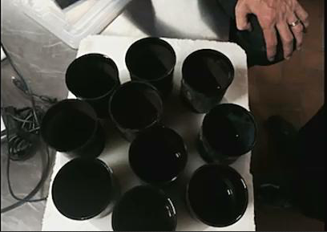
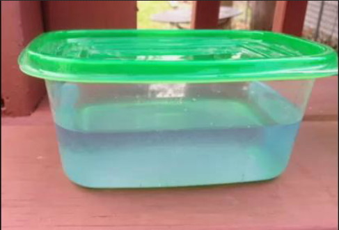
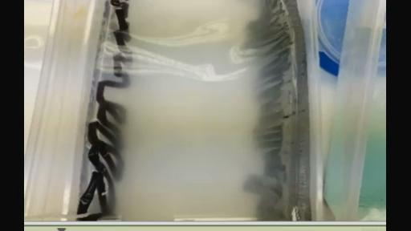
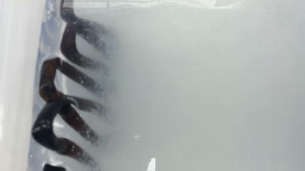
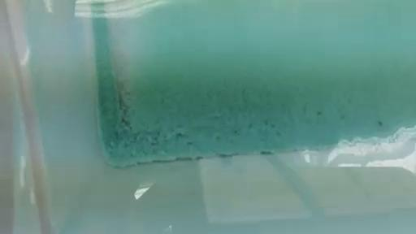
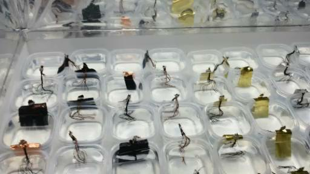
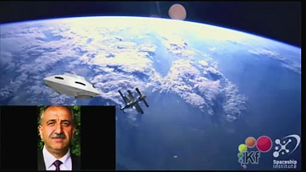

（文中听不清的地方，欢迎广大英语能力强的爱好者根据原视频的标注时间提供补充译文，会随时更新）
RICK：这是第23次教学，我想已经要准备开始了。凯史先生已经在线了，太空学院的ARMEN也在。还有其他一些一直以来参加的人们，现在已经准备好了，那么我把麦克风教给凯史先生来介绍今天要谈论的话题。我们还有一些从其他人来的问题要问凯史先生。凯史先生你想怎么样开始呢？
KESHE：像往常一样，无论你们在哪里向你们问早上好，今天你们知道我们的学院仍然在假期当中已经有2个星期了，我们尝试补充知识并且回答在过去几个月和几年中留下来的问题。我解释一下就在我上线之前，有多事情我们尝试回答那些关于如何发展那些人们感兴趣的昼夜发电的电源板或者生命之杯，像往常一样，我可以向你们报告一些事情，第一个生命之杯已经离开了基金会发往目的地南非去处理有关埃博拉病毒造成的疾病。我希望在这个事情上我们可以获得政府的全面合作。第一份用于测试埃博拉病毒的材料已经离开了我们将要在非洲进行测试。出现的疑问就是我们不知道当生命之杯达到的时候，是否能获得政府关于对生命进行测试的授权，我们会看到情况怎么发展。我有很多想法关于我们会期待得到什么，我们把这个实验分为3个部分进行，一个部分是对于生命之杯的应用。

(生命之杯)
RICK：凯史先生，对不起。我们在LIVESTREAM上的录音有了一些问题。有些地方缺少了，你能够再重新减少一些你刚才几分钟说过的一些情况吗？很抱歉。
KESHE：好的。我所说的就是关于基金会的部分工作，像我刚才说的我们被非洲国家请求参加这件事情，看看这项技术是否可以应用在一些非洲国家的埃博拉病毒的病情。他们的大使直接对我们提出了请求，而且些材料已经离开了基金会，去进行3个实验，第一个生命之杯已经从基金会送出去了在非洲进行生命测试，然后另外两种材料我们也提供了。实际上，当它们达到的时候我们会知道，当超轻型飞机被政府和这个国家的总统接受到。添加一个实验是可以做的。因为请求是直接来自于政府最高领导人的，因为他们现在对这个病毒没有解决方案。我们这么快可以这次试验的理由就是因为，这是由他们的大使直接提出的。同时埃博拉（EBOLA）是一种病毒，在太空当中有着比细菌或者其他的更多病毒。所以我们会看到这些医生进行的实验会进行的如何，同时我们有一些联系人，会告诉我们，在现场会不会有一些正面的结果，如果可以的话，那么我们这些材料会被立刻在外部制造出来。对于这种病毒的感染。看看我们能否逆转这种情况。这对于我们来说是未知的，但是这是当第二次对方没有解决手段的情况下我们进行国际参与的这种突发的危机管理，处理一些情况。像大家知道的，福岛本周已经让这个工作继续下去了，在本周我已经接到了福岛的消息，在接下来几周就会做出决定。然后就会来看我们怎么样发展这项系统来消除土地中的污染，在福岛和日本机构一起来做这项工作。所以说这是第二次我们受到请求，由大使提出请求让我们去参与的事件。因为这种事件目前没有解决方案，所以需要我们去试图提供解决方案。虽然我们目前不知道我们最后的完整结果，直到我们在现场做了实验之后才能够知道。其中送走的材料一个是生命之杯，这个材料就会直接的消除对任何病毒或者被病毒接触过的东西进行消毒，一个是内服的。看看我们是否能够在内部改变这种疾病的症状。现在这个疾病的一个最大的问题就会产生内出血，我们以一个不同的角度来看这个问题：因为在血液中的这些细胞变得非常的活跃，以至于它们能够通过血管的纤维组织。
如果我们进行测量一下的话就会发现血管变得非常薄了，所以我们试图去改变这个症状。我们送走的材料里面的一个具有改变这种症状，因为我们看到了。所以我希望通过这个政府的实验，我们会得到授权去治疗，同时我们已经得到了授权，因为要求是由大使提出的要求让我们来进行帮助。然后我们就会看到结果会怎么样，这对于我们来说是很重要的，对于要进行的深度太空的方面测试是非常重要的。我们会看到这第二次的帮助的实验会有什么样的结果，这个材料会在接下来几天内到达非洲。我认为这个会给我们的整个过程带来另外一个维度。这个情况就是如果它是正面有效果的话，这些非洲的政府他们就可以立刻自己来做这个事情，不需要外界的帮助他们发展。在几周之内就事态就可以得到控制。这个对于病毒控制的过程就会给我们另外的一个内部的视角。然后我们会把所有的信息都像现在这样转给ELIYA，给这些医疗方面的人去一进步研究这些事情，现在有另外额外的事情就是：关于马耳他的医疗中心现在正在被建设成一个公司，希望在未来几周内。然后我们就会作为一个国际机构运行马耳他健康中心，这个要非常感谢马耳他这些人的努力工作。这个是非常重要的，对于基金会是个重要的支持，同时对于健康的领域是个很大的支持。对于福岛的情况就像我刚才提到的，由于一个公司提出的关于治理污染的请求，就在上个星期一提出了这项请求。当他们有了这种来自内部请求的必须的程序，可能就会在大约下周，就会有一个计划可能就要动身飞去东京去和日本的公司和机构，还有政府重新的一起来计划消除土地中的污染，同时还有解决电力供应的问题。这些就是在假期当中一些事情的进展情况，在实验室当中我们没有一些发展只是在维持着这些反应器，没有一个是缺席的。等待着知识寻求者们回来。在充气的时候我犯了几个错误，但是也许有个理由，因为这些失败可能有它的理由。我们会看到失败会给我们带来什么，有一种情况就是，这个犯错的情况两次是由于充进了太多的气了，然后连接线打开了。但是一般来说总会给我们带来好的消息。在某种程度上，在容器里制造了挤压的环境，但容器没有什么大的问题，但是有一些结果，非常奇怪的结果。我想当ARMEN回来在这些反应器中充入甘斯，我们会看到有非常有趣的效果。因为那些甘斯反应器开始显示，特别是跟中间那一组接近的反应器。它显示出了能量上有了立刻的反应。就是在我们每次充入氢气的时候。它会从1.2安培降低到大约0.9安培，有大约30%的降低。就是我每一次加入一点点量的氢气往中间的反应器或者外部的反应器都是这样的。这是很有趣的现象，作为在反应器内的等离子体之间的相互作用。对于正在发生的情况我没有更多可以解释的。现在有一个对于基金会非常重要的情况就是，我们会在网站上就像我们说的释放我们所有的知识，就是通过网站的论坛来释放我们的论文。我已经告诉了网络管理员在官网上（官网地址：http://www.keshefoundation.org/
）建立一个新的部分，就要添加一个基金会的工作板块，这部分会直接连接到所有的这些知识寻求者的网络教学上。所以到时候就会有新的文章，还包括知识寻求者的网络教学，教学快板就在论文板块附近，所以很快你就可以通过网站直接连接到网络教学了。有什么问题吗？
RICK：是的。现在在LIVESTREAM上有一个问题，关于是不是凯史基金会可以做一个排行榜。这种关于PDF版本的，如果做生命之杯的方案。可以通过贝宝（PAYPAL）支付。这个是在考虑之中吗？
KESHE：当我们释放“生命之杯”的时候，我们这个过程会一步步的做完，现在只有9个杯子了，因为有1个已经发往非洲了。那个杯子需要一些小的调整，在我发出去之前已经进行了一些小的调整。无论什么我们所学会知道的东西，我们都会让你们拥有。会有一个PDF文件在我上来之前，我跟RICK解释过，意大利他们的摄像组为意大利的电视台做了一个纪录片。我们在想是不是邀请他们到这里来，然后做一个非常高品质的专业摄像，一步步的展示做这个不需要任何的语言，我们试图把这个做的非常专业，任何人只要看这个就可以按照这个做。然后大家可以自己加任何语言的字幕，如果你愿意的话可以自己去添加。然后你可以用它，目前你们需要用这种各种杯子的组合。直到我们可以制造出一个合金，这个合金可以做到大部分的工作。在过去几周当中，有一个问题就是大家问的问题就是关于生命之杯，在历史上很多人在寻找这种圣杯（传说中耶稣最后晚餐所用之杯），作为一个杯子可以给你任何的东西，青春还有其他的，当这个杯子被最后完成的时候，它的最终版本会就是这个“圣杯”。这种就是不同人在以不同的名字在寻找的东西。所以在很多文献和书籍当中，还有在很多经书当中，都在描述这个人们寻找的杯子就是这个“圣杯”。当我们做出来的最终版本就会是圣杯。这个就是你们在寻求的为了保持青春和治愈疾病，还有其他用途的杯子。但是是以你能够理解的方式，不是说你手拿着它或者从里面喝水就可以了。后我会给大家解释圣杯是怎么样和你的身体运行连接的。我们物理的身体和连接人们灵魂的情感有一个分离。相同的一个杯子被可以不同的人使用，为了他自己的需求或者不论他们的需求是什么。所以为了回答我收到的这个问题就是，这个杯子是否就是在圣经里面曾经被许诺过的？是的，就是这个。让我们以正确的方式来把它传递你们，你们每个人都可以用它来喝水。但是你必须要明白你的希望是什么，你希望从里面接受到什么，因为它是活动动态的，这是个学习的过程就像我们最开始说的你要为你的反应器去祈祷，为你的杯子祈祷，因为这个杯子必须达到这种透明和清晰的状态，这样它就可以给你所需要的。有一个宗教人士问过我，你能够确认这个杯子就是圣杯吗？是的。它就是圣杯！所以如果你一直在寻求挖掘这个上千年了的话，它是在你的手当中，一旦你明白了如何去做它。但是人们在寻找的圣杯是在寻找它的物理状态，但是你必须要明白这些涂层是动态的，它们有场体可以感觉和明白。它们所具有的场体会跟你的三维的物质状态会发生相互作用，通过它的磁引力场，在很多情况下你甚至都不需要从杯子里面喝水，你可以手捧着杯子你就能够得到你所需要的东西。如果你看到了这个杯子的照片。它是内外都被涂层过的。当你拿它来喝的时候就在你的内部的情感和灵魂产生相互作用，在外部是当你握着杯子的时候连接到了你的物理状态的，所以手和你的思想要统一。必须作为“一体”才能够在圣杯里接受这种知识，还有你的愿望。我可以告诉你们有2个步骤可以解释，这是第二步，第一步就是不要去寻找杯子，这些杯子具有三个维度的层次外围的，杯体周围的外部，还有杯子的外表面和内部。你们已经看到了这张照片。
RICK：是的，我现在就在LIVESTREAM上展示这个杯子。
KESHE：好的，然后你用手从外面握着这个杯子。你就和它的物质状态连接了起来，我展示给了知识寻求者们，在上部有一个？（18:24 on
the top there is a
????internally），在所有的这些杯子的内部都有连接，这个连接就在我们的身体和我们的灵魂之间。当你从内部从杯子中喝东西的时候，你就会有这种连接，这就是和你的灵魂连接或者和你的情感连接。所以当你看这些生命之杯的时候，这些就是圣杯。但是你必须要明白你所喝的这个水并不是只是在喝这个水本身，你必须要在物理上和情感上和这个水保持平衡。在杯子内部的涂层会把这个东西传送到水里。在外部的涂层是给你的身体的。当它们和愿望统一和谐的在一起的时候。你会接受到你所需要的。很多人会拿起生命之杯可能会说，它什么都没有，它什么都没有给我们。因为你的思想和情感没有伴随你的物理状态进入到需要吸收场体的环境。当你祈祷的时候，（19:38
when you ???these cups and give
）当我制造杯子给他们和平的生命，当你具有和平的愿望，还有这种宁静和平等，任何人从这个杯子喝的时候都会从中接受到。出了这个边界它就不会给你东西，因为你的愿望，你给了它设置了限制的条件。这个就是它怎么样工作的。这个可能是比制造杯子本身更最重要的事情。这个是真的，所以不要只是想去要去碰，或者用这个杯子去喝。
RICK：有一个问题。
KESHE：好的，说吧。
RICK：就是凯史先生，你会给人们这种让人们处于合适的状态的训练吗？
KESHE：这不是一个合适的状态，而这就是一种生活方式，就像我之前一直解释的那样，你可以拥抱一个人或者你可以抱紧一个人展示你对他有多么爱，但是在你的头脑当中，你说我希望这个人死，爱不应该是物理的，而是大脑里面也要想。很多情况下，我们看到世界领导人他们经常轻松拥抱，和亲吻。但是他们相互之间是最大的敌人。
RICK：哦，我理解你的话就是。你不光要有这种愿望，就是特定比如恢复健康或者什么发生，就是希望从这个杯子当中获得的。这种希望还要在你的生活当中一起处于这种状态，而不是只是那一个瞬间。
KESHE：是的。这个是我们的生活的方式。即使人们在谈论这种圣杯，这些人他们的生活和基督必须要保持一致才能够收到。当那些国王从中喝水的时候他们只能够收到一个东西。你们会发现大街上随便一个人喝这个水会过着像国王一样的生活。因为他是以基督的生活方式在生活着。这又一次的是人们在寻求这种物质上的东西，希望这个杯子可以做到，但是这种物理物质的状态是来自于它内部的存有，它的情感部分和它的灵魂。这个杯子会给很多人一个测验。他们会一直喝下去直到他们发现这个杯子终于现在会工作了，那个人就会说我试了10年这个一直都不工作，我上一周喝然后第一次的感觉到状态很好，然后说了一堆。
（第一次翻译截止00：22：55）
KESHE：因为这是你第一次才能够明白你的期望，你的物理行为和情感部分必须要处于平和的状态下，然后你就能够接受到了。你会发现很多人会用这个杯子，他们会说这个杯子不起作用，是垃圾。但是他们不知道是因为他们物理的部分拿着杯子，但是他们的情感和灵魂上没有以这种和平的正确的方式跟杯子保持一致。而是由于你太肤浅了所以无法接收到。这个杯子实际上是跟知识寻求者们坐在反应器前边做的是一样的效果。我告诉他们你们可以给与可以获取，这个基本上是一个完全静态版本的反应器。不要去急着制造生命之杯，要抓紧让你自己内部的存在处于正确的状态下，然后你就会发现生命之杯是生活在你的身体之内的。下一个问题。
RICK：谢谢，这真的是一个非常好的回答。下一个问题就是跟这个相关的，就是是否凯史基金会会做一个PDF的文件，关于可以制造昼夜能量板的，这样我们可以在PAYPAL上付款购买。
KESHE：这个并不是要支付的话，我们会做一些视频然后可以让大家可以自行制造或者制造电源板的公司他们也可以制造。但是就跟我之前曾经说过的那样，这周那些意大利人在这里。我们给已经充电的电池进行放电，我觉得可能今天早上能够放空，这个大概要花24小时来把这个完全充电的特别小的电池给放空。所以他们自从午饭时间就离开了这个灯在中午之后就一直亮着的。我们在这里给将它连接安装起来然后让它放电。直到昨天的午间灯光依然亮着还有50%的电，所以今天或者明天看是否能完全放空。然后我们再把它放在电池板上重新充电。这就是第二次。当电池充满电之后。如果意大利人同意的话，也许我们下一周可以给大家进行展示，我曾经要求他们是不是可以到这里来，然后我们打开摄像头让人们能够看到。然后他们下周开始就会直接进行商品化了。但是现在我们必须要做这个实验，我们把这个电池完全放电然后再充电，为了给手电筒进行充电我们要把它进行充电。现在我们有3个手电筒在这里工作着，基本上就是这样短柄的。他们有电路，所有的东西都在一个小电路板上或者固定到上面的。就像以前一样我们给大家任何东西都是免费的。你如果想对于基金会进行捐助的话，想复制的人们你们可以这样做。这个同样会是和意大利的摄像组来进行。当我们做好的时候，我们会看到这个。我已经把相同的版本传给了我们在日本东京的朋友。因为他们要求了这一个。所以很可能完全商业化版的产品可能会从东京，日本的公司开始。（26：15
company,??????, ??in tokyo，???we are in japan
）当我们再去日本或者在东京，然后我们就会明白到时候怎么样来做这件事，就会找一个最好的方式来进行。
RICK：还有一个类似的问题，是从LIVESTREAM的HARMONY问的，就是能够让知识寻求者们做一个视频一步步的来制作一个静态的反应器，至少可以产生100瓦的能吗?
KESHE：100瓦这个无法去计算的。你如果操作这种系统的话，这是你会碰到的其中的一个问题，如果你去用这种静态反应器的话，你用纳米涂层做的这个。你从中取得你所需要的，这个是我一直在持续说的。纳米涂层这个你可以串联起来，然后看你需要多少电压和电流你就连接多少。意大利人和日本人的公司最有可能做这个，他们会制造这种电池做为能源供应。还有其他问题吗？
某人：是的。凯史先生，生命之杯跟教堂里面他们给来祈祷的人们的圣水有什么相同之处吗？
KESHE：我不知道，这个你要问这些牧师，他们给水的时候他们给了什么样的希望和祝愿。你必须要明白当他们给你们水的时候，他所做的姿态是什么样的。面包是掰开的，这个是我的身体。水和酒是他要给你的，现在你会明白了杯子里的过程。杯子的物质状态就是面包，为了明白这个实质，你就必须要理解他的姿势的含义，那意味着什么。当你在教堂里面的时候牧师给了你面包，可能有什么事情你就没有得到葡萄酒，你就什么也没有得到，你如果想要看物质的东西，你就必须要看它的结构。你必须明白给予时候的目的是什么。就是耶稣基督给我们圣水时候的目的。你们必须要明白基督为什么给以及给的目的是什么，包括你们祝福他的名字。你们太物质了，请试图去明白这个目的和产生了什么样的连接，否则在2千年之后我们就不会有面包的痕迹了，就不会有那最初的面包了。（指人类不会再关心基督的教义，文明又会倒退）有一个事情非常有意思的就是，你们知道我相信各种信仰，因为在我所处的地方我的理解方式上它们都是整体的一部分。很多次我和我太太在教堂做礼拜的时候就说到，我看见这种大家传递这个盒子从一个人传到另外一个人，使得大家能够往里放入钱，最后收集起来。假如这样做会怎么样呢？比如我们把盒子从这边传过去，如果中间的下一位传递者需要钱来活着的话，然后就可以从中间拿取这个钱，那你会觉得在你两侧放入钱的人他们会有什么样的感受呢？这两个人是为了给予需要的人还是只是为了显示他们是给予者而给予呢？这就是人们对这种物理状态是一个整个错误的认识，我曾经参加过一个宗教团体的会议，一个人要求从这个团体里得到资金上的帮助。因为他有一个问题。我就问这个团体的负责人，这个人需要帮助，不然的话他不会来这里。他的回答给了我打击，在很多程度上对我的生活改变很大，他说我们来这里是为了来接受而不是给予的，这个就是问题所在。所以耶稣基督的身体的实质是什么呢？如果物理身体有问题的话，他给了你身体，但是你不知道这也会影响我们的灵魂，所以不要看酒和面包是否是相同的东西，我们改变了面包，因为面包对于人类来说就意味着生命的精华。这个面包就给了物质方面的知识。葡萄酒就会触动你大脑中的情感，这个就是实相的含义。当面包和葡萄酒在和谐的状态时，你才能够收到耶稣基督给你的东西。所以用生命之杯也是一样的。在杯子之外有多少的话，在杯子内部的有多少。然后你就会被启发了，你就会收到你所需要的东西了。下一个问题。
VINCE：早上好，凯史先生。我想问你的问题就是生命之杯里的水，因为在杯子里面周围的等离子体会改变水的结构。这个会不会也同样会发生在其他的装置里面，就是比如这些纳米涂层处理过的线在这些装置当中，有没有一种方法在那种类型的环境当中来调节水的结构。使得我们能够做的也能够达到和我们和生命之杯同样的效果，不需做这种以不同形式做的涂层处理呢？就像你说的比如不同的颜色。
KESHE：在将来当我们进一步的时候，生命之杯会是一个动态的反应器，我们已经跟知识寻求者们开始了这个过程，当他们坐在反应器前面不用接触反应器，接受他们想要接受和给予他们能够给出的。在太空当中，我们不会一直有水和面包，或者这种物理形态的杯子。所以怎么样在水里面和真空当中创造这种环境，只是这种能量是你希望得到还是给予的，所以如果你用纳米涂层或者动态的等离子体反应器。或者你去把铜的杯子做涂层，这种黄铜的杯子或者铝的杯子，或者镍的杯子，这都是没有任何区别的。因为这种涂层在这一部分或者某些部分上基本上来说就是黑色的。这种黑颜色意味着接受着所有的光谱，因为你的想法是二维的磁引力场，所以黑色的部分会吸收所有的东西-整个的光谱。你不可能破坏这些杯子。
你也不可能引起这种伤害，对任何人造成伤害。所以如果你要用铜线的话，这个是因为你在看它的物理形态。你可以在你的动态反应器周围制造一个环境，就完全可以让它的行为和生命之杯是一样的。你就可以碰触这个反应器的大气层，就是你可以跟它的场体来连接，你就完全可以接受到你从生命之杯里获取的一样的东西。有一个特别有趣的问题就是，为什么我们去介入有关非洲的事情，就是给予这个生命之杯，就是想看看谁能够从中得到好处，谁不能够接受到任何东西，他们要看看它是不是能够给人们治病。虽然它不是一个治病的治疗过程。我想看一下他们的记录，谁曾经用过这个杯子后存活了下来，或者是不是有病人用它了之后可以活下来。然后我就会问他们问题，就是当他们用这个杯子喝的时候他们当时有什么希望。
VINCE：我想这是一个非常好的例子。制造这种需求就是我现在是不是能够接受这个效果，因为如果你用这个杯子喝水的话，如果你有一点点疑惑的话，这个疑惑作为磁引力场，然后就会（37:00
fields, and will should ???）。
KESHE：我看到这些知识寻求者们坐在反应器的前边，他们具有这种疑惑和犹豫，就是他们的这种思维方式：“我给予吗？我会得到吗？”我会让场体好像是在给予但是我是想要得到。我就能够在监视器上看到，我可以知道这些坐在反应器前边的知识寻求者们比他们的灵魂还要清楚，
因为我可以通过灵魂和监视器看到他们，他们站在我面前毫无遮盖着，关于他们是什么，他们是谁。我一直在说我的技术，我的知识可能不会因为好处而被接受，而是对其应用的恐惧。这项技术可以做什么，可以改变什么。我们看到了这些。在福岛的话讲会如何使用，因为生命的恐惧，因为他们害怕人为制造的灾难。所以我们现在也希望非洲对于埃博拉病毒会有效。如果这项技术证明是正确的，同时按照期望可以传播出去，然后你就会发现很多的病毒可以被这种非常简单的方法控制住。因为你必须要明白这个病毒的运行在物理的内部结构中和物质产生的场体相互作用，具有这种微观上的结构，是物理上的相互作用和分裂，病毒主要是场体的交互作用。对很多医学界还有医药界的人从来就没有明白这种病毒的问题，所以这是第一次的它是以场体的形式进行相互作用的。我们会看到这一点的。有很多很多的知识，都有相同的结构，有很多的信息和能量在相同的结构当中。它只取决于你的物理身体和灵魂如何选择的。有一个就是有很多的知识寻求者们尝试制作这种昼夜的灯，必须要记得的就是在很多方面来说，当你制造这些灯的话，你要为你的灯来祈祷，这样就会带给你启迪。然后你就会看到的不是物理形态的灯，你要看到真相并不是一定要看到这个灯。因为不要忘记这些涂层实际上在吸收甚至是你的情感。因为它是个等离子体，这个就是人类必须要开始明白的。对于新的科技没有任何东西是隐藏起来的，也没有任何东西是可以浪费的。当你制造你的手电筒或者当你制造你的生命之杯的时候，这些都是在涂层当中的，这些是三维的磁引力场它们在那里是吸收它所需要吸收的。所以它们同时也吸收情感作为情感的场体，你的这种情感传递给下一个人，给下一次，当你下一次需要它的时候就会把它带到一个层次上。下一个问题。（某人插话）请让我说完。人类会伴随这项科技会被推到一个完全新的测试位置上，会去检测他们自己而不是材料。看看最后的结果会是什么样的会是非常有意思的。
RICK：凯史先生，你给予人类的情感和人类的感觉进行区分吗？就是从你的内在的自我而来的感觉，从灵魂中或者存有，你对人类的情感和你内在的灵魂的感知这个进行区分吗？还是说它们就是一回事儿呢？
KESHE：不。情感和感觉是一样的。但是感觉是和你的物理连接的，这种情感你所感知到的就是你想要的或者什么，你的感觉允许你展示出来。通过这种哭或者表达反映，我不会太过区分这种物理的状态和灵魂。我昨天有一个很奇怪的经历，我必须要通过高速去参加一个会议。在高速公路在我的前面的车里面有一个灵车里面有一个棺材，所以就像我平常的样子，我说拿走得你所需要的吧，然后我就感觉到这个灵魂什么都不想要。所以对于我来说感觉非常奇怪，然后我要开车到他的旁边，我就想我的天你取得你任何想要的东西，如果你要缺少任何东西，然后我就开过去了。所以我就在想是不是这个棺材是空的，就是他们拿这个棺材去装一个死尸。所以这就取决于里面是不是有一个尸体在里面已经接受到了足够的东西，它在它的层面上比较舒服。或者可能里面什么都没有，所以你给予了但是你不知道它有没有收到。所以感觉是跟物理的状态有关的，灵魂和情感是不同的。我曾经解释过，有人曾经问过我，我们这周有过讨论。我认为好像是跟凯若琳，就是我们这一生的目的到底是什么，为什么我们在这里生活着。我跟她解释到，一个母亲给了一个孩子生命，即使在胎儿还在母亲身体中，孩子就有一个灵魂。当母亲生产的时候会伴随很多的痛苦和牺牲，曾经怀孕了9个月在她的身体里面，一旦当身体出来之后，妈妈就等于完成了她的使命。这个妈妈的使命就是给出一个新的生命。现在这个生命的存在只是几秒钟或者一百年，这个生命的意义就是给予灵魂一个生命，去给灵魂的造物。不管这个生命是在这里是生活了100年还是几秒钟，是没有任何区别的。事实上那些死的很早的人，很早离开他们的物理身体的人，一点也没有收到任何损害或者没有任何东西从中被拿走，这个是一个纯净的灵魂。在地球上生活了上百年的人伤害了很多人，也被很多人伤害，所以他的灵魂的等级就被改变了。这种物理性不是我们出生的理由，我们的物理身体是作为孵化器，使得你的灵魂能够创造出来，从没有物理状态变成能够变成到从物理的状态中分离出来。这就是全部，就是为什么或者说母亲给一个小孩生命的目的。对于这样一个小孩这样他就能够产生一个新的灵魂，然后去使得它可以没有维度的限制。对于妈妈经受的一切痛苦，同样的使得灵魂分离开。当妈妈经历的痛苦是当你的身体和灵魂离开的时候，痛苦是一样的。你身体经受的痛苦使得灵魂可以和身体分来来，然后灵魂就是有一个自己的生命了。就会独立于物理的身体。同样的就像孩子变得独立于它的母亲一样。通过给予出生使得它能够独立。我们出生是为了来传递，是为了成为灵魂的创造者，这个灵魂是没有维度的。就是作为一个没有维度限制的实体。这就是创造这种人类身体的目的，你可以把它叫做灵魂，可以把它叫做和灵魂有关的情感部分。当在妈妈的子宫里，大脑产生的时候，这个人的灵魂就创造完成了。测试的时间，就是能够让灵魂增加了什么或者从中拿走了什么，就像我们看到很多的牧师在这种做礼拜的时候给予小孩面包和酒，但是之后他们会虐待这些孩童。所以这些垃圾灵魂会去哪里呢？这就是一开始最初破坏了这个面包时候的灵魂的打算吗？这就是他的愿望吗？然后就会虐待这些儿童，灵魂的命令从来就没被这些牧师们执行过。在大家面前以基督的状态给大家面包，像基督一样用同样的手，这就是我们一直通过这么久时间里所看到的人类。
所以就像我说的不会有很多人在我们的"诺亚方舟"上，当这个船来的时候并不是我们不让你们登上，你会作为自己的裁判审判你自己，你会避免上这艘船而不是作为上面的一个旅客抵达上面。
因为你知道在这个大门那里你会被测验。在你登上船之前你会成为你自己做的事情的裁判。因为你知道的就像在诺亚的故事当中每一个动物当中最好的2个会被带走，我们不会来裁判，而是你自己对自己裁判是否应当上这艘船。这就是我们对他们说的一样的，就是他们从基金会偷了这本书，来免费下载这个书。你就会被剥落，然后你自己来决定，你是否是一个小偷，因为那就是你在太空当中的习惯，我们不会去做任何的裁判，你会自己对自己进行裁判。就像我一直和一些人所说的那样，不要用分给面包的人作为标准来判断这个是否是上帝的房子。
RICK：凯史先生，有一个问题。关于这种非法的下载，就是你的书籍。就是像你提出的也许有10万次。SANDOR曾经说过，对于这些人我们是不是可以提供一个机会来邀请他们用PAYPAL向凯史基金会捐助。
KESHE：不是的。我们不是在寻找这种物质上的支付。而是他们当时的目的，这是有一个目的的。我在很久以前碰到过这个，很早的时候见到了梅尔教授（特斯拉科技研究者：http://www.meyl.eu/go/index.html?dir=80_Meyl&page=1&sublevel=0
视频采访http://www.tudou.com/programs/view/cJXkvUdPZ3w/），就像你们大家知道的，出于某些原因我曾经在2-3年前在德国，我在他的家里，他跟我展示了他的一本书，他跟我说，迈赫兰这本书有600页，他们曾经下载了，在网站上是免费的。你能够从那里下载下来，但对于科学什么也不会带来。他说对于这一点我没有任何的收入。因为他们对于我做了这件事。我说不用担心的，他们下载这个他们永远不会得到这个知识，他们读这本书就会像一个猴子一样。真正的这种知识不是通过这种版权来传输的，不是和基金会有关的。对于很多人是和他们的习惯造成的。今天早上在我开始上SKYPE之前，软件就说你的SKYPE过期了不能够会话你需要上传。所以我按了一下，然后我想天啊，我现在没有VIAS来支付款项。我希望我没有对软件做错什么事情，这个是一种免费的下载。只是这种升级，当我升级的时候它不能够进入了，它必须是在你的内部，而不是现在才下载的。并不是说会有对释放的惩罚来去进行的支付。没有一个惩罚，是你自己你必须做这个然后你就会明白。我有一个知识寻求者们告诉了我，我下载了你的书，然后因为我读了你的书我才到了这里。我就说你的灵魂已经失败了。他现在不在这和我们在一起了。所以你想你有权利这么做的话，如果我把我的书免费的放在网络上的话，就会没有任何条件。如果在这上面放上一个条件，然后你认为你有权利去这么做（下载），那么你就已经切断了这个连接了。要明白这一点，没有更多的惩罚，惩罚的时代已经过去了。我几天前对我的太太说，如果我释放了这种对摩西的惩罚的话，就是由于他们所做的事情，那么在这个行星上将不会有摩西的名字留下来了。如果我对默罕默德的追随者做同样的也是一样的事情，就不会有任何默罕默德留存下来。这不是在文章当中的，但是惩罚的时代已经过去了。人类必须发现他们自己的和平，然后就不会再有惩罚，然后通过上帝一切事情就都会是正确的了。在过去的这几周里多少次，我坐在那里我就说必须要对现在的情况做些什么。惩罚对于人们没有起作用。因为人们从来没有明白，在整个宇宙中从来没有惩罚在宇宙中总是会有一个平衡。在今天开始的时候我说，当我在一面的反应器中充入一点氢气的时候，甘斯反应器它改变了自己的能量，因为它需要它，是为了在整个12个反应器组里和其他的反应器达到一个平衡使得反应器能够保持正常状态。这个就是人类的一种习惯。事实上对于人类来说，所有发生的最好的一件事情就是网络，因为现在的人们可以立刻的来测试他们自己。我不知道你是不是得到了允许，我认为有一个在奥地利的伊朗人追随者，发给了我一封邮件和一个连接。是一个伊朗的知名歌手，唱这首歌，实际上就把基金会代表什么的含义都表达了出来。但是这个歌曲是用波斯语唱的，然后我把这个连接标记到放到了基金会的连接上，就像你们知道的这就是基金会在思考的。我给这个人回信说，你是不是能够给歌唱演员写封信问一下是否能够获得授权如果我可以在这首歌上加字幕，我们可以用这个来做为基金会的会歌。然后我就发现了这个歌唱家的网站，然后给了他的网站写了一封邮件。如果你允许这首歌作为我们基金会的会歌，这就是所有的这种希望。就是人类所感觉到的一切就是我们是什么，那么将会没有枪支没有监狱，因为人类有了杀戮的习惯。然后你被抓住的话你会就会在监狱里渡过了。
这个监狱必须要在你的灵魂里面。害怕你不会得到什么东西，对于我来说我会想我会给予，我可以得到什么，然后我应该得到的却没有收到，因为我哪里做错了。你会发现很多这样的习惯不会存在于素食的一代人当中，（55:41
vegetarian，this ???? ？？but the
animal），但是动物在那个层面上是不存在的。就是我们是不是接受了更多的能量，我们用它来侵略，或者我们是不是必须要把能量用侵略的形式释放出去，或者我们是不是可以重复这么做来感觉到兴奋。这就是问题所在。当你从生命之杯里喝水的时候。你可能会花三个月或者10年的时间，使得你的灵魂和物理身体达到平衡来达成这个结果。这些生命之杯曾经被基金会以各种形式给出过到健康领域中在人身体的过程研究中
，以各种掩盖的方式给出过已经有10年的时间了。但是没有人明白关于身体的过程。有这种上千的，上千的这种生命之杯（56:43 of cups of
life in this ???? sence
），这些人曾经跟我们基金会有关系，如果你曾经用过这种蓝色或者绿色的杯子，或者黑色的杯子，这些杯子的颜色有一个意义，然后你很可能会有在这些组合系统之一的了，你就会收到生命之杯。你就会感觉好一些或者使得你自己的健康问题就会远离了。现在我们制造出来使得大家能够综合的看到，没有惩罚，惩罚的时代已经过去了。惩罚从来没有对于过去上帝的使者在那个级别上所设置的问题给出答案。惩罚不解决问题，在你惩罚你的孩子上百次的时候。但是你如果给他们亲吻和拥抱的话，他们觉得他们做不对他们就得不到拥抱和亲吻，他们想要得到亲吻和拥抱，你会发现这个样子结果会更好。这种惩罚是由和基督和摩西所设定的。还有其他的上帝的传导者们所设置的已经结束了，我们把它给你使得你自己看能够得到什么。
RICK：凯史先生有一个问题，凯史先生你的观点是什么呢？就是关于现在在加沙地带那里的情况。
KESHE：你不会想知道的。你不想知道。
RICK：好的，那我还有另外一个问题。
KESHE：让我告诉你一些事情，就像你知道我们住在哪里，我们曾经住在这个地球上最漂亮的一个地方。我不认为（叹口气）上帝能够更和蔼了，（停顿几秒）在这个地方，当我去散步的时候，这种事情经常发生，即使现在因为是暑期的时候，全世界各地的人到这个地方来度过假期，来去发现他们身体内部的和平或者他们的这种物理状态，然后我听到很多人在说希伯来语，因为我的背景懂一点我明白一点希伯来语，我一直就会跟这些从以色列来度假人们说，我太太上个周末也在和一个人谈话。这个女士尝试在说，你在新闻上所听到的不是实际上在以色列发生的，整个都是错误的。他们试图在明白如何以及为什么会相互残杀。所以我总是，当我跟他们谈话的时候我总在我最大的问题就是我从篱笆（意指:国境线或争议线）的两边过来的，我看不到对于一片和平的土地上有任何的战斗理由，这种实相是我不同意巴勒斯坦人他们对于权利，也不同意以色列人对巴勒斯坦人所做的。但是你必须要明白双方各自的理由，一方是为了使得他们的集体得到自由，另外一方是为了保护这个集体。双方都是由于恐惧，当要为这份恐惧来辩护的时候，就是通过制造和贩卖买武器来完成，这里令人感觉奇怪的事情就是，如果你在巴勒斯坦的一部分你可以在以色列工作。而来自另外一部分的巴勒斯坦人就会被关起来。因为他们可能是亲戚或者兄弟姐妹，他们就住在一个国家的不同的地方。当我上次在以色列的时候我去了一个圣地，我可以看到阿拉伯人在做园艺，我就问他们那些在这里的犹太人发生了什么事情。他们就说他们在以色列。哦，他们说我们在这里没有问题，我们住在一起一起工作。他们从巴勒斯坦这边的一个地方的边界那边过来工作，他们在这里有家庭。然后在这种相同的地方的其他部分的，他们具有相同的背景，他们就成了恐怖主义者。他们就必须要被杀害掉。所以谁会从中得到好处呢？那些往这里卖武器并且为这个行为进行辩护的人。但是问题是我曾经在莫斯科祈祷，我曾经在清真寺祈祷，在犹太教会堂祈祷，曾经在教堂里面祈祷。但是这种感觉都是虚无的，没有上帝。如果你走进一个教堂里，你一进去就会闻到一个气味，还有有的教堂和寺院你就会闻到死人身体的味道，然后没有人能够闻到。不是那种物理上的死亡而是以感情上的这种死亡。因为那里什么都没有，他们来到那里是因为只有一个目的，就是来抢劫。来乞讨。而不是来给予和接受的。这些圣地，这些宗教的地方，还有些国家建立起来是以宗教的名义。他们闻起来都是一个味道。都是这种腐烂的味道，就是以各种不同的方式，你走进梵蒂冈你就会闻到。你走进这个最大的清真寺，你仍然能够闻到，因为这种教导的益处的实质再也不在那里了，只是以这种物理状态来恐吓人们。越大的建筑那么就是人们越容易被震慑住，然后他们就认为得到了更大的权力。我曾经在谈话里面说道，这种教堂和庙宇，所有这些宗教的建筑必须要建立在地下。然后人们就会意识到最后的命运是什么了。那就是被恐吓的足够多了，它们不值得在地面上留着。因为在最后你会在地面上结束掉它们，下一个问题。
（第二次翻译截止65:03）
RICK：你刚刚提到就是闻到气味，你进入到一个房间里就能够闻到这个房间里的气氛。但是以一个不同的方式，不是像其他大多数人那个样子只是闻到了气味。这个跟甘斯材料有关系吗？你曾经提到过纳米粒子和味道有关。
KESHE：这个是情感的作用，是留在这里的情感。
RICK：那科技界如何能够理解这种闻是感情上即刻就闻到，是不是因为鼻子距离大脑最近。是不是我们进入到屋里立刻第一个就能够感受到的东西，我们是先闻到气味然后再看到景色，然后再是声音之类的。
KESHE：不是的，不是的。在闻这之前还有一个步骤，这种闻你必须要理解这种物理的结构。你闻到的气味是气体在甘斯状态下的结构，是晶体的结构，这个气体所占有的空间的形状。如果你在正方形里面释放氢气，那么氢气的形状就是正方体的。
如果在一个球体当中，那么气体就有球体的形状，这种味道就是气体在一种类似金刚石晶体的结构，然后当它通过你的鼻子来到你的骨头的地方，就是在你的前额头，然后它就改变成你的大脑能够识别的东西。但是在你闻到味道之前，就是在你的额头前边，在你的前额，在你的头的右侧你会看到这种鲸鱼这种海豚的形状，在你的大脑中前额的右侧，在你的大脑前额的部分你有一个接收器，可以闻到，还有品尝，能够理解这个情感。当你闻到这个味道之前。就像这种声音的接收器一样，这个不需要眼睛，这个不需要物理形态的东西。因为这个是你大脑的一部分，是即时的，这就是你怎么样来建立对一个人的信任，对他感觉安全。你不是说再闻到自后感觉到这个味道安全可靠，你也不会吃什么东西，然后感觉到它是安全可食用的。眼睛是你皮肤的一部分，在经过了白万年，在你经过拉伸之后就变得透明了。你前额的这部分是直接和你的情感相连的，你不需要去闻，你可以感觉到，你能够明白。你去品尝你的这个环境。然后去品尝在这个环境中残留下的东西，你不是去闻衣服或者凳子，你知道什么东西被留在了椅子上。就是什么东西被留在了房间屋子的环境里。这就是当我去到哪里的时候我进入到这些地方的时候就可以直接就感觉到的。这个就是我们的祖先所做的。你去感知这种情感和灵魂。这就是我所做的一部分。我总在跟我的夫人和我周围的人说，唯独可以让人们失败的只有他们自己而不是我。因为我知道他们我看到了他们。这个实质就是当你对你的生活感觉好的时候，这就是它是如何做到的。很多人问我你为什么不用你释放的医疗的部分，然后你就可以挣很多的钱，挣几百万几百万元的钱。我跟他们的回答是“不”。（01:09:01
said no,because??????,i can do 200-300 medicals
）因为如果是为了赚钱的话，我就可以建立200-300个医疗的部分，可以使得基金会成为一个非常有钱的机构。然后就会在外表看起来更好。但是我不支持他们认为重要的实质性需要做的事情。但是你们必须要理解的很多人并不明白真相是什么，以及它是如何形成的。他们是如何允许别人在物理身上来虐待他们。但是他们会通过丢失灵魂来遭受到这种苦难。我们在物理上展示我们想要展示的。但是通过我们灵魂的这种情感我们从来就不展示，因为人类没有准备好去读取灵魂。当你纯净到一定的程度可以读取人类的灵魂的时候。然后你就会发现你根本不需要这种物理上的存在了。我把这个用各种形态的婚姻，还有各种关系，还有用各种方式去解释，然后你就会看到越来越多。我们曾经有一个案例，我不知道是否曾经提到过。我们在尼诺刚（比利时凯史基金会基地）有一个案例，有一位女士因为疾病而瘫痪了，她就找到了我们，她不能够走路。当她来见我的时候，当我握着她的手的时候，她就可以在这个屋子里面走了。然后她的丈夫就说你根本起效，就没有给她改进，这些全是骗人的把戏还有其他的一些话。我让她坐在我的旁边，就是进行了一个私人的谈话。她就向我解释，如果我每次展示我好了能走路的话，他就会强奸我，所以这就是他对我所做的大约有30年的时间了。所以我就假装我瘫痪的，所以这样我就安全了。就对我说你的治疗程序根本是没有错的。它是有效的，我就是走不了路。现在我就能走路了。如果他回家发现我能走路，之前那种事情就会再发生。所以到底是哪里出错了呢？这个男人他这种物理的行为表现的这个过程。人类习惯去虐待一些东西，我们认为我们有权利来虐待他们。但是我看到，我可以感觉到，我根本就不需要眼睛来看，你们当中很多人同样具有这种功能。只是你自己蒙住了你自己的双眼，因为这种物质上的东西使得你更容易的做出决定。下一个问题。
RICK：有在GOTOMEETING里提出的问题吗？
KESHE：我认为很多人有问题要问他们自己。
RICK：是的。（笑）他们害怕对于这一点来问问题。
BRAT：凯史先生，我有一个问题。
KESHE：好的。
BRAT：你能够听到吗？好的。心脏结构的中间具有纤维组织，有这种电流的活动。
KESHE：你能重复一下你的问题吗？我头几个词没有听见。
BRAT：好的。就是心脏里面的纤维，当产生一个电信号的时候，这个结构使得这个信号的能量能够进入，现在在大脑的中间，当你建立这个结构的时候。当你制造一个情感结构的时候，这个连接创造了一个结构，一个程序。这个也同样使得你能够接受等离子体，对吗？
KESHE：我不明白。你能够再解释一下吗？
BRAT：这个很难解释，当人们讨论到特别细节的地方，我曾经发给过你一封邮件，你可以读这封邮件，然后可以明白我想要明白什么。
RICK：你能把你的问题换个角度重新再说一下吗？使得回答可以简单一点。
BRAT：不行，我那个时候就写了一整页的信息来解释这个问题。
RICK：那你怎么期待凯史几句话就来回答你的问题呢？
BRAT：如果他知道我在说什么的话，可能就会回到了。我也不知道。
RICK：没有人明白你这个问题。如果不能够很详细的说清楚这个问题的话，对其他人也不会有什么帮助，所以你还是试图把这个问题简单一点。如果你能够的话，要不然就得问下一个问题。我认为我能明白你说的有些东西，我认为你是把心脏和大脑连接起来。就是根据情感，你能够把这个问题再组织的简单一点吗？
BRAT：不是光心脏和大脑的问题。允许这种能量进入然后吸收掉。如果你能够创造这个结构的话你就能够吸收能量。然后你的想法，就是你对你大脑的细腻的调节可以创建出一个结构，然后就可以使得能量能够被吸收。如果你没有正确的想法的话，然后你的结构就不会允许它，所以这是相同的东西，就像你的心脏的跳动还有你的呼吸允许这个结构。等离子体就能够被吸收。
KESHE：在很多方面上我可能是明白了你的问题，也许我可以回答。你的大脑或者你的情感部分不创造心脏的跳动。它一直都是常规的，你的反应是它最终的产物，所以你的心脏的跳动会一直改变，你创造了持续不同的磁引力场，就是对你的心脏，你的心脏基本上就是一个动态的等离子体反应器。你创造出了磁场，这就是为什么你会爱上了一个女人，然后3年之后你就爱上另外一个女人。或者反过来也一样。就是你大脑的状态，这种情感，还有人类这种对于情感的感觉，在大脑当中是一直不变的，是固定的。只是根据他是什么样子和他需要吸收什么。
BRAT：我是在谈论物理的结构使得门能够被打开，使得你的情感能够打开，或者你利用身体的另外一部分，使得你能够吸收能量，就像用金刚石的结构一样。（01:15:58
and then you have a ?????, keshe: nono, ）
KESHE：不是的，不是的。也许我能明白你，也许我可以从一个方式来回答你。如果我没有明白你的问题的话，你纠正我。
（叹气）这是创造人类身体的目的实质。这就是在我所有的教学中一直在说的。作为你存在的情感部分的尺寸比花生要大一点，比核桃要小一点。它没有物理上的这种相互作用。但是它发射出去的磁引力场会根据物理身体来相互作用，去展示它的这种运行。这是什么含义呢？这就是说你的情感部分不是说给你的物理部分发送信号，然后来去亲吻或者拥抱。但是它是送出信息是以这种场体的方式。然后就会被你的大脑的物理部分接受到。然后你就会展示出反应，以这种接吻和拥抱来表现出来。或者通过打击，你就用这些行为表现出情感。
BRAT：是的。这个就是我所说的。但是有身体其他部分的结构来以相同的方式吸收能量。
KESHE：是的，让我再来解释一下。每一个人是在这种不同的场体强度下工作的。即使它是相同的等离子体，这个就是我在其他的网络教学讲座当中提到的。这是一个相同的等离子体。如果你往里面中间走的话，它就会改变它的颜色。取决于它如何展示出它和环境产生的交互作用。心脏的跳动一样是产生了这种等离子体条件。因为它所在的地方，它的运行。但是它是以不同层面的磁引力场的强度上。心脏的磁引力场可以被情感的部分吸收或者接受，当灵魂有需要的时候，当情感方面有需求的话，它会去到宇宙更中心的地方去获得，通过场体的连接会去得到他所需要的东西，然后达到这个平衡。这个是人类所不明白的。基本上就和我们在实验室中所设立的三组反应器的情况是一样的，当在2米之外的一个反应器充入了一点点气体之后，就会对于另外一个反应器起作用，即使反应器不是物质的，也会直接起作用，因为它需要在它所在的位置上保持平衡待下去。你的灵魂你的情感部分，就像我在很多讲座当中都提到的。就是花生和核桃的这个尺寸，你在你的生命当中所做的任何事情，你所有的呼吸所有的走路，你所做的所有事情，你的杀戮还有你所有的爱。都是为了保持这个花生（大小的部分）能够运行。如果你能够把这个花生从人的身体的结构里面拿走的话，然后你就可以在这个宇宙中的任何地方接触到任何的物理身体然后就可以应用相同的物体继续的存在了。在将来，当人类能够达到完全明白人类根本不需要物理身体的时候，不需要这种被创造出来的约束，你就会带着你大脑当中的情感部分。你就可以在宇宙当中任何地方可以向它进行供应能量。你可以跟它进行谈话，可以明白它的情感。然后你就会明白这些婴儿都用一种语言来交谈。在一个妈妈的子宫当中和另外一个子宫里的婴儿是怎么谈话的了。这个是没有物理身体的需要。但是在当前，对于人类来说还太遥远还不能明白。你不需要带着你的整个身体来去感受，来具有这种情感，还有智慧和它的工作。就像我一直说的，当我和医疗界人士谈话的时候，如果你可以把大脑当中的情感部分拿走的话。身体的其他部分还有大脑的其他部分，还有在头盖骨里所有这些巨大的腔体中都装满了这个材料的场体，你其余的物理身体部分，你的心脏，四肢都是为了能够让这个“花生”部分产生工作，这样它就可以工作来吸收能量。它可以跟其他的所有维度都可以进行连接和交流，人类很快会明白，当人类成熟的时候人类就会看到真相。所以在将来你根本不需要带着你的四肢，就像我一直所说的。
你会看到有一些最最天才的人，他们就是瘫痪的。这种物理身体和灵魂的运行是没有关系的。现在所发生的就是，当人的身体中放入一个机械的心脏，这个会影响灵魂的运行或者情感吗？我们能够得到疯狂的人吗？因为具有不同的心脏跳动，这个是机械的，它是铬材料的，不管它用什么材料。再一次的，你还是再找这种物理性的存在，情感部分的运行工作是和人类的灵魂相连接的。它释放出它的信息，以同样的方式就像反应器一样。但是什么接受和排斥的是由大脑其他部分来决定的。它就允许在物理形态上在当时的情况下以某种行为来展示它自己，我们就会看到了。明白很多事情是和你的情感你的灵魂的运行有关的，和情感的运行有关的，还有物理的运行是有关的，乃至和整个物理状态的运行都有关系。如果你用氧气开启身体的话，我应该说空气，不是氧气。使得肺部把它转换成能量，然后到血液当中，然后直接就进入到你的情感的这个部分。当感情部分不接受这个能量的时候，你就称之为死亡了。你可以很多天的不喝水，你可以很多天不用吃饭。就像我前几个教学中所说的，你可以调节你的肺功能。调节肺能够吸收这个场体的能量。就像你吸收水的能量和食品的能量一样。所以你会以一种特别简单的方式来明白。如果你把手放在其他人的嘴巴上，然后你不让它呼吸。或者什么人被窒息了，物理身体就会很快的死亡。因为情感控制的部分就是整个造物的精华，没有以很很快的方式接受到它所需要的能量。因为它是一直在快速的工作，一直需要大量的能量。这个时候或许你就会明白为什么，如果你看这个人的呼吸是一种提供能量的方式。食物是一种供应能量的方式，喝水也是一种供应能量的方式。但是不同的部分具有不同的目的。你呼吸的空气是为了迅速的提供能量给你的身体中的情感部分的运行。因为这个是非常活跃，非常动态的。它需要这种连续不断的供应。然后才能够发散能量到身体的各个部分去供给磁引力场。这就是为什么你如果能够的话，就是产生制造动态的能量穿越肺的膜然后进入血液，然后非常快速的进入你的大脑内部。这就是为什么你的心脏距离你的大脑那么近，然后你就会明白人类身体的工作达到了一个实质的层面了。如果你能够把大脑里面的情感部分给分离出来，就是花生大小的体积，不会比那更大了。:如果你能够一直给它供应能量的话，这个是一个动态的甘斯，但是它看上去像大脑一样的固体。如果科学界去研究一下这个结构的话，就是情感部分的结构的话，他们会看到这个这种结构的运行和在ARMEN制作的甘斯反应器里的运行是一样的。你就会看到它的质地，你会看到整个的东西是完全一样的。所以心脏的跳动，还有心脏的改变，当你有一个心脏移植的话就说你的性格会不会改变。是的，会改变。但是它不会改变你的情感和情感部分。因为不同的心脏会产生不同的磁引力场，这就是在我做了标记要在将来要谈论的问题。在医疗方面上有一个特别不相同的，就是在一个稍微不同的方向上，同时还有它的物理状态，在最近过去15-20年的时间里，由于我们生活结构的改变，以这样一种“平衡”的方式对材料的消耗，我们的身体就逐步习惯于这些所食用的东西。我们的身体的物质尺寸方面有所增加，我们看到很多人有200-300公斤重，其他的有180公斤。
这个大家所称之为的肥胖症制造了一个非常庞大的市场。对于那些在健康医疗方面工作的人，然后他们就相出了各种不同的方案怎么样来减肥，怎么样才能够减轻重量。有一种办法就是可以做到人们认为，有一些超重的人们试图去做的就是他们从这种200或者180公斤减少到100公斤。就是变得更加轻一些。你必须要意识到你不是天生就该有这样的尺寸的，而是你创造改变了条件使得你的物理身体变成这样的尺寸。这个过程一般需要花好几年的时间，你不是一下子就增加了50或者100公斤。
通过5年，10年，或者20年的时间你增加了这么多，你创造了这个条件然后可以吸收储存的更多。所以你身体里其他的器官和部分就改变了它的方式来支持你的体重。所以工作的过程就是对于你的心脏还有肝脏，所有的这些器官都要协调起来，然后一起来支持你的体重。200公斤，因为这个是它所需要的，就像你需要的，让我们假设，如果你需要从你的胰腺产生1吨什么物质，从其他的腺体产生2吨物质来运行使得这200公斤可以工作。现在人们对于减肥变得非常的时髦，通过减少他们的胃的尺寸，还有其他的各种过程。这个过程就像一个开关，然后你每天你把开关打开之后你就可以吃，一天你关上了之后就吃的像一个花生那么多，而现在你降低了胃的工作量，有很多医学界应用的过程，他们想尽任何办法来帮助这些人，但是某种程度上他们根本就不明白他们创造了什么，这种通过节食进行的快速的减肥，因为你减小了你的胃的尺寸，不意味着你身体的其他器官是以相同的速度来协调的。我们看到一些人，然后减重了20.30.40，50公斤，这个做法的一个副作用就是：当你失去这个重量之后，你降低了脂肪，但是你的皮肤不能够响应这么快，作为脂肪层。所以你得到的就是一个巨大的皮肤层，有的时候它就像悬挂着一块肉一样。这个接下来的人，就是要减少皮肤。有些人就到医院去把这个多余的皮肤给去掉。但是医学界没有告诉你的就是，经过这个过程的很多人都显示出这种癌症的信号，还有糖尿病以及死亡。在很多情况下，我们看到了很多的糖尿病的情况增加了。有很多人因为他们的肺部变得很大来支持这么大的体重，但是现在重量并不在那里了，身体就对失去这么多的重量感到很迷惑，本来该在那里的东西不在了。你就会看到身体里面锁住的氧气，甚至会发生他们所说的在身体当中缺少氧气的情况，就是我今天提出这一点的理由就是，如果你要是想要用这些方式的话，去问你的医生，让他展示给你这些做了这些手术的病人10年之后发生了什么情况。你就会发现他们有大部分人，他们通过节食减肥的人，还有这种皮肤的切除会展示出糖尿病还有其他的各种情况。他们也会展出其他跟这一点有关的各种问题，就是各种气管之间应用的不平衡。我对你的忠告就是，请注意你在做什么。因为我们有过这个案例，还有好多的案例。就是这些医生对他们经过了这些程序，他们的胃这一层被减少，有很多人都产生了糖尿病，所以我认为医学界必须或者政府必须停止这种把胃减少一部分的做法。这并不是坏的事情，但是这个所产生的后果就会引起糖尿病和癌症，还有死亡。这个是很重要的。因为如果你想要减肥，用食品或者各种方式，需要慢慢的进行。有很多人不能够做，因为他们不懂得怎么把重量增加上去的。我认为可能有一个比较紧急的需求，尤其是西方世界，对于这种减少胃的程序。
当他们移走多余的皮肤的时候，因为这个对这些人产生了一下种意识的，还有这种心理上的压力。而且糖尿病是一种和情感上的心理压力有关的，我们在过去20年当中的研究已经证明这个观点是正确的，所以可能你的身体比较愿意有大的体重，也许它们不能够处理小尺寸的身体。可能是因为他们情感上面那一部分不能处理自己的情况，所以他们就有了这种物理身体上的改变。这个就会产生糖尿病的条件，因为胰腺一直在大量的为体重产生胰岛素，现在一下子就减少了体重之后，它不知道该如何办，就产生了很多不需要的东西，所以这个时候就制造了大量的死亡。因为这个没有被报道过。他们展示了糖尿病而不是作为减肥手术的后遗症去展示的。因为他们一直在进行这种手术。因为他们不会告诉你们，当你进行这些减少多余皮肤的手术时候你跟医生说，你能够跟我展示一下过去你10年做过手术的10病人的完整情况吗？有多少人最后是得了糖尿病，有多少人最后是死亡了，还有多少人最后是变成了皮肤癌。这种皮肤癌他们不作为皮肤手术的后遗症。是因为手术剪切皮肤之后皮肤要连接长在一起，你们就制造了不同的环境和材料，当皮肤长合固定下来的时候，他们没有通过腺体释放正确的信息使得皮肤产生凝固（固化）的效果，所以他们就制造了一个新的环境体积也就是你们称为的癌症就形成了。这个身体不能够处理的情况就会导致死亡。同样的情况，同样的过程也在使用药物厂家使用的化疗，我一直是支持这种化疗因为我们一直可以处理这种化疗出现的情况。但是这些医药公司要求他们用化疗，给我展示一下这里面还有多少人在10年后还活下来，得到的答案是0。活20年的一个也没有。过了5年还有50%的活着，不是所有的化疗都有那种情况。但是一些化疗的医生有这种情况。所以你可以选择你想要的哪个化疗，还有明白它们的副作用是什么。知道化疗的副作用是什么，这个就像我们上次所说心脏的阀门也会产生副作用一样。
（第三次翻译截止99:30）
KESHE：当你给一个人的心脏装入阀门的时候，这样你就给了一个人的生命进行了限制，你基本上是不可能再换第二个阀门了，基本上寿命就定下来了。所以关于这些减小胃的手术，大家需要理解这些手术的后续后果。我见过一些病例但是我没有接受，因为我不知道要怎么做。只是不知道你要去做什么，同时有太多的事情同时在身体里发生，有很多人采用这种缩小胃的方式，然后移除掉了表面的皮肤，然后就会形成糖尿病的条件，然后氧气就会缺少这样嘴唇的颜色就会变得发蓝。也就是缺氧了
，然后在身体的各个部分就会出现各种不同的癌症。所以大家要小心你们所要做的事情。部分的原因是因为有一个连接，你的这种情感上的意愿想要达到的事情，还有另外一方面你的物理身体上要经历这些东西。当这两方面不平衡的时候，你就会得到糖尿病。糖尿病很大程度上行和情感有关，由于情感上的原因，同时在物理身体上就会显示出来。当你的情感受到压力。因为你比需要明白你为什么需要胰岛素。你去看一下这些数字，研究一下胰岛素的结构。然后你就会明白胰岛素有什么作用，胰岛素会释放什么样的能量和它的结构。当你开始做和基金会有关的工作，就是在医疗方面的工作，总是通过"经验法则"来去看，要一直去看在材料结构里的氢气平衡和氢气平衡的连接关系，在这个材料当中是有什么样的放射性元素在其中起作用。在什么条件下一种材料能在另外的一种材料当中能够产生出放射性释放出这个能量。所以去看一下胰岛素的结构，你的胰岛素的用量会给你一个清晰的表明，会给出你的大脑里面的情感部分。我们对很多的病例都做了实验，当你允许你的情感部分能够明白自己来处理的话，对于那种情感不能够接受的情况，然后你就会发现用胰岛素的量就会明显下降，就像间断了。我们不是去测试它的物理方面的情况，我们所设计这个系统结构可以直接和情感部分相互作用，然后你就会把你的情感部分达到平衡状态，然后你的胰岛素的量就会逐步的减少。因为在物理方面上的压力对胰岛素的需求，还有这种糖还有其他的就都会达到了平衡了。你会发现很多人得糖尿病它的糖尿病是来源于出生时候的压力，就是在母亲的子宫里面。就是二类糖尿病总是发生在当这个人有所有的压力，但是在情感上不想要这个压力的时候就会在物理方面上表现出来。下一个问题。
BRAT：我有一个也是关于健康的问题，就是关于牙齿的结构，就是关于牙齿内部的晶体结构怎么吸收能量，你能解释一下吗？
KESHE：不能。（笑）可能牙医会告诉你的牙齿是你身体皮肤的一部分。所以是类似相同的结构。内部是神经系统怎么和物理的牙齿进行连接的。甚至你在咀嚼东西的时候你的牙齿仍然是从你吃的东西里面吸收能量。不是只是把食物咬碎的这个系统的作用，而是在咀嚼过程中允许很多的信息就被传递到了身体里，进入到大脑里和其他的地方。不是一个完全固体的情况。
BRAT：如果你把你的牙齿拔掉的话，你是不是就不能够吸收这部分的场体了呢？你是不是需要用另外一种方式来做这个事情，对吗？
KESHE：不一定的。因为你可能满口牙都没有了。但是你仍然能接受到这些信息。通过你的牙床或者什么之类的，还有通过你的胃。但是当你有这个牙齿的时候你会收到不同的信息，然后通过皮肤。这就很像你在水中光脚走路。然后你的手是在水的外面。当你在湖里面走路的时候，你仍然能够看到这个湖水，因为水在那里，但是你用你的脚感觉的，你有不同的感觉。当你有牙齿的时候情况是类似，你在物质上没有丢失任何东西，水是在湖里面的。但是当你去接触水的时候你会得到不同的信息，但是不会改变你从里面接受到什么。我曾经研究过关于这个牙齿很长一段时间。关于如何能够重新长出牙齿。我们知道我们有YVAN在这里，作为知识寻求者他是一位牙科医生。
我的一个亲戚也是一位牙医，我们曾经很多年一直在讨论，所以我们基本上明白这一点，但是在很多方面上我们必须要进入到很多细节上，然后才能够知道牙是什么。然后你怎么样才能够重新长出这个牙齿。
BRAT：好的，感谢你回答这些问题。当你有时间的时候能够读一下我给你发的邮件吗？
KESHE：好的，谢谢。
VINCE：凯史先生，我想知道青蛙怎么样了。
KESHE：有一个青蛙昨天死掉了，就是那个特别小的那个我们看不到腿和胳膊的青蛙。所以我把它给放到酒精里面了，等待知识寻求者回来看一看。另外一个就是非常活跃，一直在跑。另外2个还在那里，所以现在我们剩下了3个青蛙。我把容器当中放了一块石头，如果青蛙想出来的话可以到那个石头上，所以我们要看一下它们是不是在经历什么进化，这些青蛙有一个异常的问题，但是现在我们把它放在酒精里面，看看将来可以有什么样的用途。
VINCE：哦，你在上一次教学中提到过这个。这种反常是因为由于他们怎么样出生的，因为有这种反常的基因。
KESHE：有可能是，是否是这样我们还不知道，我们会看到结果。但是现在我可以看到这个反常的情况。不要忘记我们现在所处的环境。就是我们看到有成千上万的蝌蚪在小溪里面。这个是我们第二年在这里看到它们。因为是雨季和我们所具有的处于条件。我们就有一个地方就有上万的蝌蚪。我们只是看到了里面的大约40-50青蛙才会出生出来。我们也没有看到它们在这个过程里被其他的给吃掉，或者也许让鸟给吃掉或者怎么样。但是我们有它们的兄弟姐妹。我们就会看到它们应该是什么样子的。但是我们还是注意到这几个青蛙有很多的异常情况。就是这种小小的青蛙。所以我们还没有看到其他的是怎么样的，所以还需要观察一下这3只青蛙会如何。下一个问题。
VINCE：是不是这3个青蛙是被喂了甘斯，还是是不是另外2只是没有喂甘斯的。
KESHE：不是的，我们这里有剩下3个是喂过甘斯的，还有2个是没有喂过甘斯的是正常条件的。现在我们剩下5个，原来的话是有10个。下一个问题。
RICK：从LIVESTREAM有一个问题是关于甘斯的。当铜的甘斯制造出来之后，是在溶液中所有的甘斯材料从铜里来的还是有一些从主源物质里的被转换成铜了？你听懂了吗？
KESHE：我不明白。
RICK：好吧。再试一次。这个问题是谈论关于制造铜的甘斯。我也不是很确定他的意思，就是当铜甘斯被制造出来的时候，是所有的甘斯材料从溶液里面的铜里来的还是说从一些主源物理转化来的变成铜了。
KESHE：有可能都有的。因为在那个区域当中的环境会创造还有或多或少的加强铜的甘斯的条件。但是是不是主源物质显化出来作为铜的甘斯物质，我觉得是有可能的。这个在宇宙中就是这样发生的。如果你制造一个条件等离子体就会在那个条件下让自己显示出来。如果你制造一个，这就是我们想要让这些知识寻求者们下几个月当中做的。在我们制造这种环境的条件之前，其他的等离子体在里面可能会看见，就是大家所叫的“可见的盒子”。
在那里有一些东西对我们来说可能不可见不可触摸到的，但是我们如果制造了条件我们就能够看到他们，如果我们能够制造出这个条件的话。有很多事情我们都必须要学习，有很多的东西都需要一步步的来做。我们现在就到了这样一点上，我们需要这种国际间的合作。现在的情况就是我们实验室当中我们所具有的材料，不足以使得我们能够进入到下一步。所以在接下的日子里或者下周里，实际上我已经开始了对于国际上这些机构提出请求，需要这种合作。我们收到了一些来自一些大学的回复。因为我们需要科学家们在不同的方面上来明白这个技术，这样他们可以提供知识。所以这些事情是我们需要做的。我们需要吸收更多的科学家进来，让他们提供这方面的知识，把他们的专业知识加入进来。
RICK：这个时候听众当中可能会知道一些科学家，或者可以对测试来提供一些贡献和帮助。这样可以帮助太空学院，这是好的想法吗？就是试图跟他们联系。
KESHE：有一些东西不是我担心的，就像我说的我们有很多问题，根据我们现在所在的处境，这种凯史基金会作为一个机构建立在一个国家之内，就像现在在意大利这样。就是从我在过去的六周当中所看到的情况。我不认为我们具有那种权力来制造这种条件，使得所有的知识整体的知识必须要保持在一个机构里面，在一个地方。如果意大利被打压的话，或者我们这里发生什么事情的话。我们马耳他这里，还有日本、美国、伊朗的情况会如何，还有其他地方。所以我一直在想的就是，或许我们必须要开始思考，是不是在各地都建立单独独立的凯史基金会。我在试图支持这种1-2个科学家，然后他可以管理这个凯史基金会。就是以这种正确的基础和平衡上来运行凯史基金会。这种政治上的结构和经济上的结构不允许很多人还有科学家们可以移动他们的位置。我们在过去的这几周当中看到了很多这种情况，关于乌克兰。然后忽然之间，世界上最大的一个国家，就是在过去等于被孤立了起来。没有人能够做任何的事情，就像俄罗斯一样。只是因为其他人来决定，作为凯史基金会，我们作为一个开放性的基金会组织，不要给我们发邮件问“我们想要建立凯史基金会，我们能够要一个许可吗？”在你们自己对自己的许可当中你们已经有了你们自己的基金会。按照荷兰的凯史基金会一样有同样的精神气质来建立它。这是你们国家的这种利益，基本上是全人类的利益。建立起凯史基金会，同时，你想办法得到这种财政上的资源，能够使得科学家们全身心的做科研工作，不要等我们来做，我们一直在试图教导大家做事情。在意大利的中心可能到时候会作为一个榜样，你可以当做一个追赶点，或者加入进来。我曾经和网络管理员一直在谈论这个事情，就会从一个人这里面传递到下一个。建立这样一个状态就是，所有你有的和发现这种知识，你就把所有东西传送给了知识中心，这样就会保持在那里，这样在未来就会被某些人应用到。凯史基金会就是你做研究的方法，你要建立的基金会不要完全和意大利的基金会一样。请你们建立你们自己的凯史基金会，建立起你们自己的管理结构，然后来进行教学和传播。不要等待这种指导或者通过我们这里或者荷兰的基金会的方式来教你们办法，你们要去自己想办法帮助你们自己的国家和人民，我们这里是知识的银行。我们把所有的知识分享传播出去，我们必须要建立知识中心。所有这些凯史基金会的知识去到一个中心。然后这样的话我们地球上所有的人都可以免费的获得这个知识。
所以说不要来期望我们来提供所有的东西，因为现在你得到了和我们等同的知识，我们也可以从你们那里得到知识，建立你们自己的凯史基金会，寻找到一个办法，在你们的国家里可以资助科学家们来为基金会进行这种全日制的工作，或者这种半日制的工作。否则会发生什么呢？比如，如果我们要是在这里失去了一个说法语的人，去世或者事故，或者他搬走了，不应该因此那个文化那个国家的人就被剥夺了（学习的权力），因为某个人离开，我们就见证了这一点。我发现JORGE走了之后，西班牙语这一组就显示出了他们这种系统结构的弱点，这种结构上的弱点。你必须建立起你自己的凯史基金会，然后来资助科学家，资助这个项目。你可以支持资助你们自己的科学家，但是同时可以和我们有联系，凯史基金会没有边界，没有国界线。知识是免费的给予了你们所有人。时代已经过去了，以至于我们必须要再次改变了。那就是你们必须要建立你们自己的凯史基金会。
我们不会做这个工作，因为我在这里，或者谁曾经在这里，但是现在我们就失去了这个联系，试图来建立一个储存中心。然后你有一个储存的地方，你就会去到那里面有什么，发现你想要做什么，什么东西是已经有了。因为如果在5-10时间，如果我不在了的话。所以这个凯史基金会必须要连接他们自己的基地，他们自己的科学家，还有他们在那里的人。如果大家都看知识寻求者们和在荷兰的凯史基金会，所以你们要像我们那样自己建立你们的基金会，资助你们自己的基金会。有一些医生或者科学家，有一些设施可以给他们提供做为研究之用，为你们的国家为你们自己的人建立一个系统。这就是我们在意大利这里做的，还有日本人在做的安排。已经到了这种时刻，你们应该都有自己的这种聊天室。还有所有这种凯史基金会思考小组，以各种语言，现在应该赞助建立起这种程序，当需要的时候然后可以召开会议，使得科学家们全日制或者半日制的进行工作。或者是全职、兼职的来对其他人进行教学。你们必须要变得比较独立，因为我这样看，如果明天我死了的话，就会没有凯史基金会剩下了。所有的知识可能就会被丢失掉了。当我活着的时候我可以来支持教导你们，增加你们的知识或者你们可以增加我们的知识，然后在加拿大建立你们自己的基金会，然后在美国建立你们的基金会或者世界任何地方。在寻找和筹款，通过翻译书籍通过翻译论文通过制造销售能源板，可以产生新的知识。我看到了一个可以建立的方式就是可以通过制造昼夜手电筒，或者通过制造生命之杯构建，使得你们自己成为管理人员来管理这些基金会。获取你所需要的东西，然后给凯史基金会带来这种平衡。这不意味着你来就是给基金会工作的，你建立然后就必须要停止（你自己的事情），因为你在做一项慈善。它必须是以正确的方式来做，当你的灵魂是在和平的时候你的生活是平和的，就可以更好的为人类服务。要当你建立凯史基金会的时候不要给我发邮件。上帝知道你在什么地方有这些条件，你可以去看一看荷兰的凯史基金会是怎么样来为人类服务的然后你们可以怎么以不同的方式来为人类服务。我们不制造这种边界，是你们制造这个边界和条件。我们从来没有说这就是我们凯史基金会，如果你们要开创的话就要给凯史基金会什么什么，你已经看到了我们的工作了。我们是怎么样来尽我们的力来提供帮助。直接建立你们的凯史基金会，直接寻求资金支持你们自己的研究和发展，如果你不知道你可以达到100瓦的系统，如果你可以资助自己的科研，就像西班牙的小组，然后你们的小组可能有8000个人。然后一个月放入一美元支持这一个中心，然后支持1个或者2个兼职或者全职的科学家，让他们为你们感兴趣的领域进行研究，中国的凯史基金，中国会有一万人，即使每个人1年有1美元的话，也会支持很多的科研。这种等着从中心这里来喂的这种方式必须要停止了。我们在这里只是进行支持。所以如果我明天死了的话，你们怎么办呢？因为这个是不可避免的。因为我们的物理的生命上有一个时间。
当你有足够的能力支持其他人在其他地方建立凯史基金会，做同样的事情。当我接到这个电话的时候，就是当我和大使谈到关于支持非洲情况的时候。就是说是不是我们的联系人需要不需要付款，我说不需要，是我发的。我已经把一切材料都准备好了寄出去了，都是免费的。因为需要这么做，如果结果是正确的话，他们就会在非洲被教导怎么做。他们就不需要西方，不需要其他地方来做了，因为他们具有所有的东西可以支持他们自己。所以去建立自己的凯史基金会和建立荷兰的凯史基金会有同样的规范标准。然后免费的给任何人提供知识。就像我们说的这有一个物理维度上的事情，只是每个月你要是捐款1.5.10美元的话，不管怎么样，然后你有8千人的话你就有了8万美金，你就有了一个很好的凯史基金会中心了。就比我们意大利这里的还要好。我们可以支持你们中能够更好的明白这个科技的人。我前几周在和一个领事在谈话，他说我们在我们国家已经建立了组织。我们已经建立这个中心，然后来理解和发展凯史基金会的凯史科技。这个大使在为他们自己的国家在做，不要来跟我们索要这个那个。然后你建立你们自己的凯史基金会，和荷兰的基金会保持一致，然后服务你们的国家服务你们自己的人民，这样就不会有了国家的界限。有一件事情要在我还没有忘记的时候要说一下，我不知道你们知不知道卡米洛特工程这个组织，它当中的凯瑞凯西迪下一周她可能会路过意大利。她要求我们是不是能够组织一个教学，在意大利的北部给她做一个教学。如果任何人感兴趣的话，在这里可以组织一个意大利小组的话，我们可以提供信息。那么请你联系她。就可以组织这个教学，我们可以组织50-100人的样子。有可能我会在这个会议上参加一个讲座，但是如果你要想做的话也可以开放给你们来做这个，还有其他的问题吗？
RICK：这个听起来对于在意大利的人是一个很好的机会。卡米洛特工程是一个在全世界也很知名组织。
VINCE：我觉得这个对于我们所有的人都是一个很好的机会，如果能够做这个事情的话。去建立一个凯史基金会。
RICK：是的。你建立你自己的凯史基金会。你今天就建立你自己的基金会。然后邀请其他人进入这个基金会。
KESHE：你必须要建立这种物理上的，使得科学家们到一起能够进行科研。你必须要建立你自己的科研中心。当你从一点点开始的时候是很小的，但是其他的还是会到来。你让一个纯洁的心灵，然后有为人类服务的热心，你就会发现你的基金会长大的很快很快。人们就会来到你这里面，会给你说我想加入你们这里。但是你必须能够物理上有足够的来支持他们，如果他们24小时来做这项科研。除非他们有一个有钱的老爸。
RICK：现在越来越多的科学家开始进入到纳米材料的技术，这种纳米材料的研究所都能够形成，就是在全世界很多国家都可以有，最近在南非就成立了一个。有可能科学家，或者可能愿意进入跟凯史基金会有关系。或许能够半日制的进行工作。人们或许可以联系他们。
KESHE：在南非的一个人，我们正在和他联系，我记不得，我不会发音他的名字。但是我们和大学有直接的联系，跟南非的大学。他们用纳米材料纳米科学技术用于环境方面。有人发给我了一个连接，我想是RICK还是其他人发给我的。我们会继续和他又联系的，因为现在他是在假期，所以当他们回来的时候我们就会看到怎么样在南非继续发展和应用，因为这个有很大程度上和埃博拉病毒也是有关系的。
RICK：是的。我想是我发给你的连接。我对于有一些事情的发生感到高兴的就是我知道你和南非有联系。你曾经在那里待过一段时间。
KESHE：我和他们的联系是塞拉利昂政府。
RICK：哦，好的。我们跟塞拉利昂他们有很好的联系，然后还和他们的大学有联系，大学是在政府结构内的。所以这就是为什么关于埃博拉的病毒对于我的要求是从政府提出的，即使你生产出材料你在非洲提供这个实验结果是成功的，不幸的是，但是这些国家就像尼日利亚类似的国家，他们没有这种资源或者这个机器来制造，没有这个机器或者没有这个材料。所以我们有2个选择，一个是看尼日利亚或者看南非，或者通过非洲的各个不同的区域来发送这些材料。对于在非洲住的人他们明白，你知道有一些机器，即使是特别简单的机器在非洲很多地方也是不存在的。也许整个国家也就1-2台机器。每一次在西方大学的教学当中都有10倍于此的设备。
所以即使你的实验在非洲对于埃博拉病毒的实验结果是成功的话，我们还是需要去到邻国来生产这个材料。使得我们能够达到受感染的地方，所以我们必须要保持这种开放的状态，也就是为什么要你们建立你们自己的基金会，所以请大家还是建立自己的基金会，不要来看我们能做什么。我们会以各种能够的方式支持你们。我们会试图对科学家们进行教学并且一起在中心工作，所以在以后的网络教学的时候，不应该只在这里。不同的凯史基金会教学将由你们来举办，你们必须在网络上进行教学。所以这就到达了一个状态上，就是我们这个时间会公布昼夜电路板和手电筒在意大利这里。因为现在我们是直接的着手做这个事情。所以这个就会特别快的做实验可以完成。然后我们就会制造清理环境的材料，在接下来几周在意大利做这个事情，他们同样会和基金会一起做。我们在这里做的东西只会在意大利。你们在你们自己的国家做，如果你希望我们给你昼夜手电筒的图纸的话，你可以在你的国家开始生产支持基金会，这个是可以的。这个就会变成你们的一种赚钱的方式，可以使得你们那里有一些东西，这些就是你们需要来组织的东西。但是我们向你提供知识，你们必须自己建立基金会。以后我们这个知识会提供给基金会。他们就可以建立他们自己的研究中心了。
RICK：当然了，那些想要建立自己的研究中心的人，需要有一点物质上的东西来展示，比如说像手电筒，还有比如说一些实验，或者这种什么静态的东西，或者动态的反应器。有一点东西是可以来展示和说明这个科技，然后这个科技可以如何应用，或者至少可以展示一下场体和磁引力场的作用。
KESHE：事情是这样，我不知道你们是不是都看过手电筒，也许可能下次网络教学或者下一周，我们跟大家展示这个手电筒。我们在这里打开摄像头人们就可以看到这个手电筒是怎么工作的，因为我们曾经在之前几个教学中跟大家展示过。人们需要亲眼见到，我们可以展示，没有问题。
RICK：我们是人类，我们愿意眼见为实。
KESHE：我认为我们下周要做的，我们打开摄像头可能会播放那个手电筒给大家展示，所以人们可以找到其他的方法来复制这个手电筒，我有这个手电筒大概是6-7年的事情了。对于我来说这个东西已经存在了足够长的时间了。如果大家想要看的话，我们可以看一下，如果人们需要用眼睛看到才相信。实际上我们已经在不同的教学不同的地方当中已经展示了好几遍了。但是他们可以看一下，这个东西是多么的简单，我们在托斯卡纳展示过了。
RICK：你应该把这个手电筒传递一下。
KESHE：可能吧。（笑）我们会变成奥林匹克的运动员。
RICK：这个实际上应该就是那样，说不定可以用在奥林匹克上，这好像是一个很好的宣传。
KESHE：不，他们想要看到的是火。
RICK：但是现在是时候了，就像你所说的，（笑）这种结构是很多年以前的。我这么长时间就一直在跟着你的网络教学，就是看你第一次的教学影片，我记得是你的第一个教学影片说现在人类是时候应该停止使用火了。这个当时给了我很大的冲击，就是以这么简单的几句话。即使你在这种壁炉前边说这个火，说人类怎么样习惯使用火形成了习惯。因为你们知道在极长的时代中，从他们在洞穴里火就一直是非常重要的，，但是现在我们有了机会来超越不在依赖燃烧东西了，而可以采用其他更加高自然的能量。
KESHE：下周我们试图跟大家展示手电，如果摄像头工作的话，但是我们会进行过测试。如果能够在SKYPE上面把摄像头打开。这个手电筒还有其他的材料，还有人们可以来问，我们就会进行现场的展示解说。没有问题。
RICK：那很棒。
KESHE：会一个问题就是，我看很多人试图在做各种的甘斯材料。说它们能够点亮LED灯，不管怎么样。当你用液体的时候，当你看我们的实验的时候会制造出甘斯。但是过一段时间之后，这个系统就会被堵塞，所以你不能有液体在这个系统里，因为像你们看到的，我们已经看到了在这些密封的容器当中，如果放入一个电极经过几天之后。它们就得到了很多的材料制造了甘斯，这个系统就会停止。所以我们要制造这个线是要没有液体的，没有被污染的。我会在网络的视频中向你们展示怎么样制造这个东西。
（第四次翻译截止138:10）
VINCE：但是凯史先生，如果你用了蒸馏水的话，我不相信你能够用蒸馏水得到GANS，会这样对吗？
KESHE：你仍然会得到的，因为你进行镀纳米涂层的方式你就会带有材料在你的涂层上，我曾经做很多不同大量的实验，用了各种不同的容器，有蒸馏水和不是蒸馏水的，当过程开始以后，你就停止不了了。在球形的测试单元当中，我们没有看到任何的甘斯，虽然我们用了正常的水，我们用了自来水管里的普通水。有其他问题吗？hello？
ARMEN：好的，凯史先生，我用的铜和锌做GANS，在第二天的时候我就收集到了好多，这个简直是不可想象的，也许跟我设置的方法有关。但是真的很多的GANS，我一直不敢相信第二天就可以有这么多，就只是在24小时的样子。
KESHE：那产生了什么呢？产生的是CO2甘斯吗？
ARMEN：是CO2，就24小时前开始的，就只有一个盒子。
RICK：你说这个CO2是白色的材料吗？
ARMEN：是的。
RICK：刚才有人提出一个问题，他们用铜来制造这种蓝色材料的话，他们就一直很奇怪想知道。
ARMEN：是锌跟铜吗，我只是重复了一下这个实验过程，只是24小时就这么多，我感到很奇怪，在建立这个过程之后的3-4天，但是这个很奇怪这个24小时就有了，简直不可相信，我仍然在怀疑，我就是在晃动它，在铜涂层的部分上面有很多白色的堵塞，你稍微一晃的话它们就离开了，然后又重新开始了这个过程。
RICK：那么你这个盒子跟其他的盒子有什么特殊不同的吗？
ARMEN：没有不同。
RICK：好的。
VINCE：ARMEN，你是不是有这种波动的图案，就是在一面有这种像波动的形状，然后另外一面就是切成了一个条，但是是相同的材料。
ARMEN：你可能确实需要看的只是24小时，今天的话就更多了。而且多了很多。
VINCE：你是在用什么样的东西呢？
ARMEN：什么？
VINCE：你是在用什么样的盐和水？
ARMEN：是海盐，我还有一个可能是30%的，我还有一个PPM（百万分率）的结果要检测出来，到时候我可以准确的告诉你们，因为我用了过滤过的水，这个溶质是0的PPM，所以当我加盐的时候，我就可以测量它的PPM，但是我现在没有，我们会晚一点把它给发出来。
VINCE：是的，这个只是一个熟悉的部分，不是含盐度的问题，不是水的成分问题。
ARMEN：到时候我会试图给你展示的。
VINCE：所以你认为你做的是30%的浓度?
ARMEN：我认为应该是的。
KESHE：不要忘记ARMEN现在已经变成了这方面的行家，他现在有很多这方面的知识，同时，他具有测试方面的天赋不用谁告诉他，没有那种被限制，会去看看结果是什么。这就是他有的时候就会有一些想法，但是将来我们必须要把这个数据记录下来，别人就可以重复同样的过程。所以还有一个问题，就是因为这些盐都不是相同，由于这个海盐的成分不同，会给你不同的结果。即使我们都用相同的百分比的盐也不会一样，像我一直说的，如果你用白色的盐，食用盐，他们说海盐，但是你就会看到在它的包装上面会有特小特别小的说明它是提纯的海盐，然后你就会发现大多数你的材料都是相同的，因为都是差不多相同的材料，但是如果你要用真正的海盐的话，如果你用不同的海盐，你的每次实验结果就会不同，因为有不同的海有不同的盐有不同的矿物质在里面。

ARMEN：我们用了KOSHER（意为：犹太教规的、清洁的、可食的，另商品中有“犹太节食认证标志”）的盐。然后我们就会看到这个结果是什么。
KESHE：你用了什么？
ARMEN：KOSHER的盐。
KESHE：KOSHER？哈哈，怎么把盐给进行KOSHER，弄成干净的呢？
ARMEN：我不知道他们怎么把那个盐进行KOSHER的。
VINCE：我也用了那个盐。
ARMEN：不管怎么样也是很有趣的，就是用这样一点点的改变，就改变了生产产量。
VINCE：是的。是不是这样就会改变电极的结构呢？
ARMEN：是花了24小时。因为我们做过这种实验。因为我们做过这些，想用我们那种没有切口的金属板做过，但是这个是完全不同的。它产生的是非常慢的。
VINCE：我们把这些线扭曲了，还有其他一些事情。
ARMEN：我们制作了各种实验，我不知道，你会看到的，你做实验看看就知道了。
VINCE：我们看到这些图片了。


（ARMEN的试验产生白色甘斯）

（其他甘斯）
ARMEN：24小时啊！我感觉就更像一个小的反应器。
KESHE：我现在这边有一个声音的问题，就总是听不到ARMEN说话。
VINCE：对不起，因为我一直和他在说话。
KESHE：你还是要看看你用的是什么盐，这种盐会制造不同的条件。
ARMEN：（说了一个美国牌子的常用盐）就是纯粹的海盐，我今天用的是太平洋海盐，这是我今天唯一用的东西，我换了它来做？？。我不知道它是否会有不同。
KESHE：下一周让我知道你们的结果。
ARMEN：好的，我会的。我还想用岩盐试试看看有什么结果，凯史先生，你知道用岩盐的话会有什么区别吗？这个盐会有一点发红。
KESHE：是的，会有一点粉红色，我从来没试验过，你试验一下吧，因为大多数时候你买的都是提纯后的盐。
RICK：是氯化钠？但是其他的盐里面可能会有钾。
VINCE：这点需要注意。我可以去一个COLD&COLD超市买到这种粗盐，就是没有被提纯的海盐，但是它看起来和我们的餐桌盐是一样的，所以我知道也许它们不对。但是我确实发现过这种咸海盐，具有这种灰一点的颜色，这些看起来更像是直接从海里弄出来的。
ARMEN：你知道有太多种的盐了。
VINCE：是的。
KESHE：就像我说的这样，当你得到的真正海盐的时候。想知道是不是海盐唯一的办法就是在一个容器里面把你的盐给溶化它，然后静止几分钟，如果在上部得到有点脏的，像云状的东西在顶层。然后你在底层有分层。有很薄的灰色、黑色的层，这个就是海盐。如果你买一个海盐然后把它稀释的话，放置几分钟什么都没有的话，没有任何分层，那个就是提纯后的盐了。这是一个很简单的方法来测试是不是海盐。因为真正的海盐有全部的的矿物质，还有很多从海里面来的脏东西。他们做这种海盐是在露天的池子灌上水然后让它自己干，所以一切东西都在空气和海洋的因素当中，都是它的一分部。所以即使你在家里如果用真正的海盐的话，必须要洗一下这个海盐，你要把他在温水里融化稀释，然后放在那里一段时间，看看上面和底部是不是有什么黑层的东西，你可以用巾纸把上面弄干净，在上面卷着卷着就会把所有脏东西吸上来了，其他的你就可以放一个过滤器在底部，你不要碰底下的你就能得到真正的海盐了。
VINCE：是的，就是这样你就能得到真正的海盐。
KESHE：你可能得的是海盐，但是就是没有那些矿物质了。因为当你得到海盐的时候，你就得到了海里面所有的东西，包括在海里漂浮的脏东西，零碎的鱼骨头，在这个实验当中所有的东西都在里面，在这个星球的表面还有漂浮在海盐上的东西，所以当你清洗的时候，其中的部分就会形成物质在最上面和底部。你可能还是有一些金属清晰的漂浮在其中，还有其他的元素。但这是没有问题的，因为这些位于最上面和底部材料，当你把它放在你的系统里面之后会堵住（阻塞）你的系统或者它们会覆盖这个系统，或者变得到处都是，所以你要在加入这个盐之前先做一个清洁工作。我昨天让一个人来看我的容器，我们想要看一下，因为可以说他的工作是教科学的，他就看了一下ARMEN走之前制作留下的铜的蓝色容器，他看了一眼就说在这个容器的最上面是油的结构，
然后又看了一下其他桌子上的容器，他说这些是脂肪的结构，所以他跟我解释他是怎么样区分油和脂肪，他说是这个是含蛋白质的油，就像我们炒菜的油一样。他说这边这个是像脂肪因为有蛋白质结构在里面，他是那个科学领域里的老师。所以这些科学家他们只要看一眼就可以跟我们解释他们看到了什么，如何来看，以及它们是有什么结构，
哪一个过程促进了产生，可以明白什么样的盐分促进了产生了脂肪以及蛋白质。ARMEN，是不是我们在一些单元的最上班总是得到脂肪？
ARMEN：是的，是的。
KESHE：这就证明了石油以及像我们平时说实际上那些所谓的化石燃料实际上都是一些辩解或者被错误的说出了，其实和化石没有任何关系。这些用于我们汽车和引擎的石油，同时我们用的动物的脂肪的油，或者通过气体在这个行星的上层较高的位置的转换过程中创造的，就是在这个行星上的大气层中产生的，因此石油在这个行星上永远不会被用没。特别奇怪的是我们现在看到的他们所说的全球变暖，还有他们说是因为CO2的增加，但是我们制造的CO2越多的话，造油的速度就会越快。所以所说的CO2增加和全球变暖，其实是在帮助他们生产我们叫做这些石油，

（ARMEN的甘斯实验组）
所以通过百万年的时间生产的，实际上不是的，只是通过10-20年，我们只需要释放CO2到大气层当中这种过程，怎么说呢，有些事情就相当的奇怪，就是这种星球的变暖的其中一部分，过很多年后我们的南极和北极冰就会融化，实际上这是一个自然的过程。因为我们是在逐步靠近我们太阳的过程中，这是一个自然现象，实际上南北极在下面的100万年后就会完全融化，因为我们现在接近太阳几毫米的距离，因为磁引力场的作用，因为这种磁引力场正把我们向太阳拉近，这种会使得南极北极融化和二氧化碳使全球变暖没关系，这是一个错误的认识。但是这就使得很多人种植了很多树木，把它作为一个好的生意。但事实上，因为地球过去是跟木星比较接近，那个地方就是我们地球在几百万年，几十亿年前的位置，现在我们比较接近太阳的热，就会融化南北极的冰川，这也是在我们这个星球上生命要结束的开始，因为我们完全要依靠水，因为我们整个星球上全部的水都会被蒸发掉，然后就会被推到太阳系的边界，就会被其他的行星吸收，然后就会变成当凝固之后就会再次变成雨，所以现在它们试图告诉我们的全球变暖是由于我们增加了热量使得冰川融化。但实际上这是地球的一个自然过程。因为我们离太阳稍微的近了，由于母亲也就是太阳对地球的拉力，这跟全球变暖没有关系，这种全球变暖一直都在进行的，自从我们土星的位置一点点移动到现在位置的过程中就一直在变热了。但是这个热其实不是问题。而是当地球达到太阳或者其他位置的时候，所有的液体都会被蒸发掉就会回到太阳系里，当我们变得更热了因为我们越来越接近太阳母亲了，有其他问题吗？我们还在吗？
RICK：好像问题差不多，我们可以快结束了。
KESHE：好的。也许我们可以对不同的方面进行教学，或者今天我们对不同的方面做一个解释，让我们教授或者学习。怎么样来通过你的灵魂来祈祷，这样你就能够达到，让我们来学一下怎么样通过我们的灵魂来给与，这样一来我们就可以帮助其他人提升他的灵魂达到我们的位置，或者没有这种偏见的允许他们的灵魂来提升我们的灵魂。不会有恐惧，那么任何东西都不会缺少什么了。也许这是从来没有被上帝的先知使者们教过的就是，给予不一定要用语言或者思想，但是必须用情感，当你接触触动灵魂的时候，灵魂会给接受者，他需要从你的灵魂里面所接收到。也许这就是理解的方法，就是通过给予就不会失去任何东西。通过给予我们不会变的更少或者更穷。也许这是一个新的教授方法，来教会大家在宇宙中生活的方式。这种从物理上的接触，但是接触到情感就会影响到你的物理身体，因为在宇宙当中，这种任何的物理上的存有都是感情的奴隶。也许现在是开始一种新方法的时代了，去看怎么样才能够共享，不光是在知识方面，但是同时也是以真实的情感上，或者允许进入你的灵魂，这个是你们怎么样对任何灵魂把你们的灵魂打开，然后看他们需要什么，同时你也收到了自己的灵魂需要给予什么，所以说在你作为老师的同时你也变成了一个学生，同时你在分享知识的同时也获取了知识，从同样的或者更高的层面上得到。也许我会再回到这个问题，就是由RICK提出的关于我们如何考虑加沙地带的问题。让我们所有人从我们的灵魂中自由的给予以色列的总理吧（内塔尼亚胡），这样他的灵魂就会接收到他能接受到的最多状态，通过接收到灵魂就会影响他的工作和方向。也许给他的灵魂完全让他自由的接受他所需要的。
去触及这些人给他财政支持的这些人的灵魂，因为这个人是发言人，那些在幕后的人才是决定的人，也许我们通过总理的灵魂可以能够达到那些做出资助和鼓励这些行为的人的灵魂，来改变他们的灵魂。我们不是为这些人来祈祷，而是对这些人的灵魂来祈祷，或者我们给予这些人灵魂。我们知道全世界有几百万的凯史基金会的追随者，有很多人会听到我们的网络教学，所以在每一天都用一些时间打开自己的灵魂，给以色列的总理的灵魂，同样对另外一方的其他人也这么做，通过他们我们就可以来触及这些资助人的灵魂，通过这些人，我们就可以看到我们地球上人的灵魂很快的就会提升到下一点，下一个位置上。或许像我说的对于加沙地带的情况和以色列的总理，是测试我们人类如何来学习来或者给予一个灵魂，当需要这么做的时候。谁的灵魂制造了现在的条件，这种灵魂就是支持物理的身体创造条件，就是支持物理的方面来进行谈话，他们是很需要的。所以让我们给予灵魂填满他们的灵魂吧，这样他们就不会有需要了。不用惩罚他们，直接给到他们不再需要为止,这样他们觉得足够了就不会再让找另外一个口袋了。同样，对于罗斯柴尔德家族也是一样的。让我们把我们的灵魂给他们吧，把他们的灵魂提升起来，让他们去资助和平而不是资助武器，我们非常清楚是哪一个灵魂在他们的物理身体里支持什么。让他们用通过他们灵魂，天赋和财力来支持人类更好的发展，当你去睡眠的时候，当你有一个和平的时刻，但是并不是说就睡着了，就打开你的心，你的情感方面或者你的灵魂，对整个的罗斯柴尔德家庭。他们有这个需要，当他们的灵魂满足了之后，他们的这种物理身体上的行动就会改变方向，然后他们用于这种开发武器的钱就会用于为人类解决问题寻找方法。我不知道，但是也许需要我们自己为自己的灵魂祈祷我们提高之后，我们就可以触及他们的灵魂。我们在地球上的任何一个灵魂都具有之前的上帝的使者、先知的灵魂的力量。你可以使得你的灵魂能够达到基督的或者被保佑的穆罕默德的灵魂高。是你们自己对自己设置了局限，而不是你的灵魂，通过这个灵魂，如果通过团体和面包（知识）的分享。就是可以触及这个行星上的22亿人口，在2千年之后。也许我们有100万人可以触及那些少数人像罗斯柴尔德家族的人以及以色列总理灵魂，还有那些控制着这些的人的灵魂，当他们打开他们的灵魂的大门的时候，在灵魂达到身体之后我们就会找到和平并且通过和平找到发展的方向。他们的身体就找到他们的平衡，当公平达到的时候，人类就已经成熟了。有好多年了，人们在谈论关于奴役，就是用了多少的奴隶来制造埃及的金字塔，所以现在这些文件已经被翻译过来了，在石头上写的这些已经被解读出来了，然后就发现，（02:45:30
you will find out has been very very ???between the top man in the
army）然后就发现在这个部队首领和这些士兵之间有很小很小的？？？来推动这些石头，因为这种平等，（02:45:38 equality, cause
??????complete, maybe it;s the
）也许现在是时候该分享我们灵魂而不是祈祷。然后我们就可以能够达到这样一点。就是罗斯柴尔德在过去3-4百年来资助世界然后制造更多的金钱，我们给了他们所有的财富。但是同时我们是从灵魂上给他们财富，而不是物理上的。如果人类创造了谁资助战争的历史，创造能够使得战争存在的条件
，那么有一天我们就会发现没有一个灵魂可以超越这个太阳系的这个笼子。因为宇宙当中的其他生命不会让他们的灵魂出去，即使那些在财务上支持战争的人，还有那些谈论和学习战争的人。除非我们停止战争，因为在我们不能够停止战争之前，我们这些人不能够使得他们的国家停止战争，使得他们国家里的这些剩下的追随者，这样我们就没有发展一个结构，使得我们拥有加入宇宙大家庭的条件，这个是非常非常奇怪的。10年之前，所有的这些西方国家都在急着去抢劫，因为有很多可以抢劫的东西，中央银行装满了黄金。今天，相同的国家面临着更多的威胁。现在这些国家在相同的路上，但是没有人想参加，因为他们已经抢劫了中央银行了，他们也许会送一些无人机然后去袭击几个人。
但是这个国家是整个一片混乱。因为没有更多的钱去抢劫，所以他们就没有了兴趣。因为他们知道他们已经被抢劫过。或许他们抢劫了所有的国家所有的黄金之后，罗斯柴尔德就不会再对战争感兴趣了，我会为你们的灵魂祈祷。所有的你们，就是以任何名义在任何公司工作的你们，这个不是来建立一个等离子体反应器来去和这些人的灵魂来匹配然后去影响他们。他们的灵魂必须要接受太多，他们饱和之后，然后就会没有了这种选择，但是他们就必须要去找到一个的位置。然后就会变成一部分，因为我们所有的人都有同一个母亲的基因的连接，我们可以通过我们的灵魂很容易找到他们。如果我们去惩罚罗斯柴尔德
，或者惩罚这些这么多年来资助这些战争的人，通过这种销售和发展武器来赚钱，最后就会没有任何的枪支剩下来了，也就不会有给任何名字留下来了，就是对他们做的感到骄傲的东西。有一个理由，就是为什么我们会在意大利。我们坐在离基督的房子（梵蒂冈）不远的地方。我们坐在世界最大的兵工厂附近。每一次我走到布雷西亚（意大利北部），我就觉得感觉到死亡。（02:49:34
i feel the???of how much death is plan
）我感觉在这个城市里有多少的死亡计划。我为这些人的灵魂来祈祷，希望有一天他们所需要的工作不是去为了制造武器，有时候我在想如果这些他们所使用的材料，所有这些的碳还有其他东西来制造枪支，所有他们正在计划在这里制造的弹药离我这里只有几公里。我们能不能用这种制造武器的工厂来制造食物来供应整个人类，是不是能够制造一个系统使得我们自己能够飞离这个地方或者看着它改变方向。有40%的雇员是在意大利的，从18-35岁之前。怎么样我们能够重新把这些人放在能够对整个人类有贡献的位置上，而不是去制造武器，不是杀戮。我曾经听很多人说用武器尽可能够杀更多的人，因为感觉自己能够有多少权力。然后享受这种杀戮和折磨其他人类。所以你必须给这些人足够的灵魂让他们能够使得人类的这些习惯消失。这种恶魔并不存在，它只是在人类自己的内部，是他们这些人不能够接受他们自己这种物理状态的工作，就会反应到使得他们的情感麻痹，反应到他们的灵魂上。让我们学习祈祷，从我们的灵魂当中完全自由的给予。使得他们能够得到然后提高他们，对于这些罗斯柴尔德和这些支持这些战争几百年的人们，他们需要很多，因为他们的习惯。他们不知道他们自己有多低级，他们在灵魂的层次上变得如此低级了，使得他们只知道他们现在的这种位置。让我们跟教皇和所有的那些宗教领袖们来共同分享我们的灵魂。通过他们然后发现他们的灵魂，然后通过他们的灵魂找到他们的总司令，就是基督,这就是他的名字，还有摩西这些被保佑的灵魂。上帝就会保佑他们的名字，然后他们的跟踪者通过他们的名字他们就会找到和平了。感谢大家今天的参与。享受你们的生活。
ARMEN：谢谢你，凯史先生。享受生活。
RICK：非常感谢。这非常让人感觉惊奇。
KESHE：感谢大家，非常感谢，下个星期四见。
ARMEN：谢谢，再见。
RICK：好的，这是第23次教学的结束了。感谢各位今晚来参加。

（第23次教学全文完）